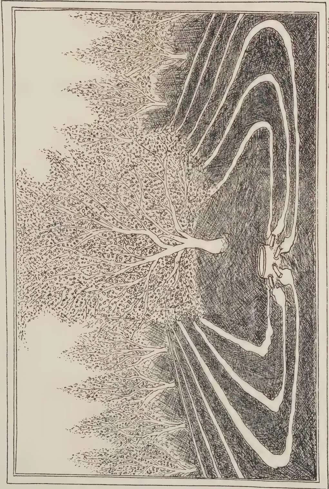
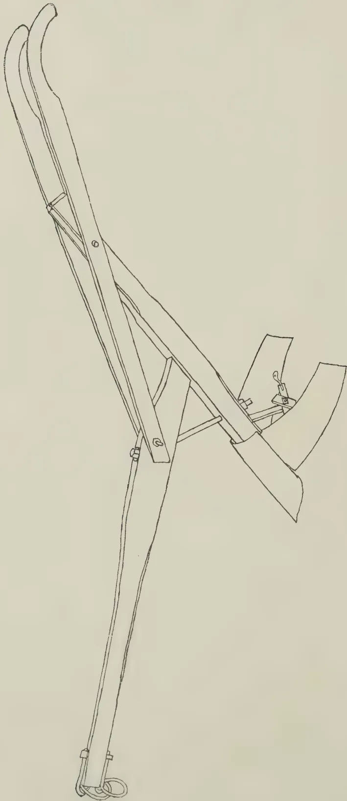

VOL. XCIII
PERADENIYA, AUGUST, 1939
No. 2
| Page | |
|---|---|
| Editorial .. .. . | 65 |
| A Study of the Methods of Cultivation of Fruit Trees with Special Reference to Citrus—Part II., Irrigation by Sohrab R. Gandhi, M.Ag. (Bombay) .. .. . | 68 |
| Coconut Oil .. .. . | 76 |
| Work in Progress in the Botanical Division of the Department of Agriculture .. .. . | 77 |
| Cultivation of Paddy .. .. . | 81 |
| Calendar of Work for August and September .. .. . | 88 |
| Soil Conservation in the Tropics .. .. . | 93 |
| Tomato Culture .. .. . | 103 |
| Minutes of the Forty-sixth Meeting of the Board of Management of the Coconut Research Scheme held on June 20, 1939 .. .. . | 114 |
| Minutes of a Meeting of the Board of the Tea Research Institute of Ceylon .. .. . | 116 |
| Nutrition in the Colonial Empire .. .. . | 120 |
| Animal Disease Return for the Month ended July, 1939 .. .. . | 126 |
| Meteorological Report for the Month ended July, 1939 .. .. . | 127 |
1—J. N. 85768 (7/39)
A large, faint watermark of a classical building, likely a library or museum, is centered on the page. It features a triangular pediment supported by four columns, with a base and steps.Digitized by the Internet Archive
in 2025
https://archive.org/details/tropical-agriculturist_1939-08_93_2
The
Tropical Agriculturist
August, 1939
EDITORIAL
PESTS AND DISEASES OF PLANTS
THE more rudimentary biological species, the bacterium, the fungus, and the insect are formidable enemies of agricultural man. In terms of money the annual loss of crops caused by these agents is estimated at several hundred millions of pounds. Human industry proceeds on the basis of a normal balance of forces in the farmer's favour in the same manner as the retail trade survives bad debts. Sometimes Nature's balance is disturbed by causes which are obscure, and an economic crop is faced with complete or partial ruin. The coffee leaf disease in Ceylon of the early eighties was a case of this kind; the Panama disease of bananas in Central America was another; a third was the potato blight which, in the middle of the last century, reduced the Irish peasant to practical starvation; and everybody is familiar with the periodical devastation of crops by locusts in Africa. The memory of these catastrophic experiences makes the farmer very apprehensive when a new disease appears or an old disease assumes epidemic proportions. Considerable uneasiness has been caused amongst the local agricultural community during the last two years by the appearance of Phloem necrosis in tea, the unusually acute and widespread incidence of oidium in rubber, the sustained virulence of the infestation of the coconut palm by the species of Phytophthora which causes the decay and fall of immature nuts, and the complete denudation of the fields of young paddy by the leaf-eating caterpillar (Spodoptera mauritia). Less spectacular (but equally effective in destroying the fruit of human industry) have been the increased activities of the Agromyza in beans, of a fly of the genus Dacus in all varieties of cucurbits, of the common fruit-fly in oranges, and of the caterpillar Margaronia caesalis in jack fruit. There is evidence of strong public feeling that in all these cases the entomologist and the plant pathologist could do much more than they have done. It would be instructive to examine in some detail the strict limits which Nature and circumstances set to their work.
66It is practically impossible to eradicate a disease that has become endemic in a country. The most illuminating demonstration of the truth of this proposition is provided by the analogous case of human diseases and pests. It is not claimed that endemic human diseases such as influenza, measles, tuberculosis and malaria, or vermin like the louse and the bug, can be eradicated. If they can be, considering the value that the world places on human health and well-being, the world would by now have rid itself of these enemies. So it is with the diseases and pests of plants. The human analogy may be pursued in a consideration of the methods, falling short of complete eradication, that may be adopted in dealing with them.
In the case of the human being, we try to—
It is obviously the duty of the scientist to make himself familiar with the symptoms of disease or with the features which establish the identity of insect pests and by the establishment and enforcement of quarantine, to assist the community to prevent, the introduction of new diseases and pests from an infested country to a free country. This function is universally recognized and practised. The cure of the affected individual is impracticable in the case of the plant chiefly because the expenditure of money and effort in cure must never exceed the market value of the cured plant. Inoculation is a young science even in human diseases. Perhaps one may some day discover a method of immunization by inoculation from such diseases as the citrus canker and the leaf spot of betel. But the world is still remote from such discovery. Segregation of growing plants is ruled out by their anchorage to one spot, although the destruction of the affected individual, locally known as the "cut and burn method",—a form of remedy which is not available in the case of the human being—may take the place of segregation. There remains the sanitary method. But that is not a matter for the expert any more than keeping lice off one's head or bugs off one's bed is a duty of the doctor. The scientist should discover by research the vulnerable points in the life histories of insects and broadcast the information—that, for instance, by frequent turning of the manure heap the coconut grower reduces the beetle attack on his palm or that by the application of a film of sulphur dust to new foliage the incidence
67of oidium can be reduced—and he may organize demonstrations and, by their means, create a temporary form of mass enthusiasm, even of mass hysteria; but sustained interest in sanitation must be born within the individual.
There are two lines of investigation and of application of scientific method specially available to the plant pathologist and the agricultural entomologist. In most species there are individual plants which are immune to some diseases. It is possible to select these resistant plants and by selection and inter-breeding to fix, in what will be a new variety, those characteristics which give the immunity. This is very important work for the plant pathologist and to do it efficiently he must be not only a pathologist but a botanist, a geneticist and an agriculturist as well. The entomologist can take advantage of the mutual predacity of insects themselves. Some organisms are parasitic in some stage of another. In the case of indigenous pests, the parasite is generally there and Nature establishes its own working equilibrium. For example, the coffee berry borer (Stephanoderes hampei) is present in the African colonies, but the Prorops nasuta controls it by parasitism and, in the result, the coffee grower saves a reasonable proportion of his crop. In these cases the entomologist must advise and assist the public to recognize and nurse its ally. In the case of a recently-introduced pest his responsibility is more direct and his work more effective. He can seek out the natural enemy of the pest in its country of origin and establish it in the new home of the insect. These are the limits of achievement which are open to the scientist. Those who expect more from him court disappointment.
Note by the Editor.—The Editor regrets that in the Editorial of the June, 1939, number of The Tropical Agriculturist the total annual consumption of quinine in Ceylon was given as 17,000 lb. when in fact it was 29,000 lb. A correction slip is issued with this number and subscribers are requested to affix it at the appropriate place in the Editorial.
68SOHRAB R. GANDHI, M.Ag. (Bombay),
DEMONSTRATOR IN PLANT PROPAGATION,
FARM SCHOOL, PERADENIYA
THE manner in which irrigation water penetrates and spreads in the soil was briefly discussed in Part I. of this study (The Tropical Agriculturist, Vol. XCII. No. 1, January, 1939). Further discussion on the phenomenon of water movement in the soil is necessary before we proceed to discuss the methods of the application of irrigation water.
In connexion with general irrigation practices we often see special terms used such as "under irrigation" and "over irrigation" to signify certain amounts of water applied to the soil to meet the varying needs of trees in different seasons. For example the term "under irrigation" or "light irrigation" is often used to convey the idea that the moisture content of the soil mass occupied by the roots of the trees will be raised to a certain percentage by the application of small amounts of water because of the downward capillary movement of the water with a consequent equalization of the moisture content of the whole soil mass. This belief is erroneous. According to Veihmeyer (2),* when water is applied to a soil the latter is moistened to its fullest capacity to a definite depth. All attempts by Veihmeyer to maintain a soil moisture percentage less than that which the soil would hold against the force of gravity, which is the maximum capillary capacity, have met with failure. This maximum amount of water held in the soil after the excess gravitational water has drained away and after the rate of downward movement of water has materially decreased is termed the "field capacity" of the soil.
In view of Veihmeyer's investigations, therefore, smaller amounts of water will wet a soil to its field capacity to a smaller depth while larger amounts will wet it to a larger depth. Hence a light irrigation wets a shallow depth of soil to its field capacity while a heavier irrigation will wet a correspondingly greater depth also to its field capacity.
* Numbers refer to references on page 75.
69Once the soil attains its field capacity the moisture remains stationary and is not able to move appreciably in an upward or lateral direction from the moist layers of the soil to the drier ones unless the permanent water table exists within 6 to 10 feet of the ground surface. Accordingly, in the absence of a standing water table, if the irrigation water wets only a part of the root zone to its field capacity the roots in the wetted area alone will be benefited while the roots outside the wetted zone will suffer.
In true irrigation terminology, a tree is said to be over irrigated when enough water is applied to cause percolation below the roots or when the applications are so frequent as to affect aeration of the soil.
The absorption of a certain quantity of water by the tree is determined by its leaf surface and weather conditions irrespective of the kind of soil on which it grows, the soil merely serving as a reservoir from which water is extracted by the plant in accordance with its needs. Since light soil has a low water-holding capacity, its supply of moisture is more quickly exhausted than a heavier soil with a higher water storage capacity. Consequently irrigations on light soils should be lighter and more frequent. The amounts of water used by plants of the same species and of similar leaf area under the same climatic conditions are precisely the same whether growing on light or heavy soil. The amount of water to be applied at each irrigation varies with the type and depth of soil to be wetted and the moisture content at the time of irrigation. Thus it will be seen that the data obtained regarding the amounts of water to be applied to a citrus grove under one set of climatic and soil conditions cannot be made use of universally and that every important citrus area in Ceylon will have its own irrigation problem to be individually investigated. In the absence of elaborate investigations on the subject, the writer is of opinion that it would be easy for any intelligent grower to work out fairly accurate data of water requirements for his own grove if he finds out first to what depth the roots of his trees have penetrated into the soil. After ascertaining this the next step would be to find out how much water is needed to penetrate to the full depth of soil which accommodates the roots. This can be done by adding varying quantities of water to several trees selected at random in different parts of the orchard. Finally, the penetration of water into the soil can be observed by digging a trench by the side of the irrigation bed twenty-four hours after the application of water which is the time taken by the majority of our well-drained soils for the gravitational water to drain, stabilize and cease to spread further in the soil.
The irrigation bed should be as large as the spread of the tree crown so that the observation trench falls a little outside the
70drip of the tree. The grower need not apprehend any damage to trees resulting from the cutting of roots by trenching beyond the drip. These roots are thin and fibrous and soon regenerate and multiply profusely when the trench is refilled. In fact, pruning of roots in this manner once in about five years improves the bearing capacity of citrus trees.
The observations on the movement of irrigation water are best carried out during a long spell of dry weather when absolutely no rain is expected. The soil before irrigating should be thoroughly dried out by withholding water from the trees for a long time so as to cause slight curling of their leaves. The curling of leaves in the case of citrus is an indication that the soil of its main root zone is thoroughly dry and is about to exhaust its store of available water. It is at this dry stage that the soil is capable of showing its full capacity for wetting to a definite depth under the influence of a given amount of water. Observations made by irrigating a moist soil, that is when it is already at a higher water content, will not be of any practical use. In a moist soil it may not be easy to discern distinctly the line dividing the wetted and unwetted portions of the soil such as will be clearly seen when a dry soil is wetted.
The soils are most economically irrigated when they are fairly dry. There is no advantage in applying water to soils when they are already wet as the greater part of it merely percolates downwards and is lost.
The method of irrigation is governed by the topography of the land and the supply of water, and must be so arranged as to guarantee uniform distribution and penetration of water to all parts of the root system. Flood, basin, ring and furrow methods of irrigation with their various modifications have been long practised with varying degrees of success in different parts of the world but none of them can be singled out to be the best for all conditions.
Uncontrolled flooding of large pieces of land is to be generally condemned as an orchard practice. Orchards planted on sandy and similar light soils should not be flood irrigated as these soils have a tendency to take too much water at the upper head. Flooding is generally used in the case of alkali soils to leach the harmful salts from the root zone of the trees. Flooding is also useful in destroying termites especially in the soils of tropical countries having long spells of dry weather. Except under special circumstances, therefore, flooding should be avoided as a method of irrigating orchards. It is not only a wasteful practice but it also destroys the porosity of clay and of fine-textured soils as explained later in this article.
The most common method employed in the dry zone of Ceylon as well as in India is to irrigate in a small square or circular
71shallow basin about 6 to 9 inches deep and approximately as wide as the spread of the tree branches. In areas where the underground water supply is scarce and water has to be lifted from great depths, the dimensions of the irrigation bed are reduced to any convenient size to suit the quantity of water desired to be given to each tree. In this system of irrigation, when the tree is young, the part of its root system beyond the water basin, which corresponds to the drip of the crown, suffers from lack of water for nearly eight months of the year except during the monsoon when all the root-spread is uniformly wetted. However, in a closely-spaced citrus plantation (14 feet) of an advanced age (10 to 20 years) where tree branches touch one another and the water basins are correspondingly enlarged to the full spread of the tree crown, the entire orchard space gets wetted.
The basin system, which is in other words flooding in small compartments, is quite a convenient and efficient method of irrigation on flat lands where water is available in limited quantities and the soil is fairly coarse-textured, absorptive and well drained. But this system has been found unsuitable for fine-textured soils just as has the large scale flooding referred to above. As far back as 1910, Howard (1) in India pointed out the danger of injury to the physical texture of fine-textured soils of Pusa by surface flooding in basins. Flooding in basins, or otherwise, destroys porosity and the surface soil easily runs together. Especially during the dry, hot weather, irrigated land, if it is silty, sets on the surface into a cement-like mass which rapidly loses its moisture. This packing cuts off the air supply to the surface roots and the trees begin to look unhealthy. In order to obviate the evil effects of packing, Howard (2) advocated a sort of furrow-ring system which consisted of surrounding each tree (peach) with a ring (circular trench) 9 inches wide and 6 inches deep, the position of the ring corresponding to the outer spread of branches. It may be pointed out here that in this furrow-ring method, the part of the root system of the tree accommodated in the soil below the ring only could be benefited by the irrigation water. Water impounded for a few minutes in a 6-inch deep trench will not appreciably move sideways into the soil and hence will not wet sufficiently the lateral root-spread of the tree situated at a distance on either side of the circular trench.
Besides the disadvantages mentioned above, the main drawbacks of both the basin and the furrow-ring systems are the cost of preparation of basins and of rings and the subsequent cultivation to keep out weeds which involves a good deal of manual labour.
The outstanding method which has largely influenced our present ideas of orchard irrigation, is a sort of furrow irrigation
72as universally practised in citrus orchards in Southern California, U. S. A., and adopted recently with various modifications in other citrus growing countries such as South Africa and Palestine. This furrow irrigation (Fig. 1) is managed by means of a system of underground pipes, concrete hydrants and regulating valves. Shallow furrows about 6 to 9 inches deep and 2 feet wide are drawn beyond the drip of the tree crown and between rows of trees. The flow of water is so regulated by means of a valve fixed in the hydrants as to control its very gradual seepage into the sides and the bottom of the furrows. The application of water in this manner by means of a slow, trickling, continuous flow from the hydrant over a fixed period, varying from 24 to 48 hours according to the soil, is found sufficient for completely wetting the required volume of soil containing the entire root system of the tree.
To adopt any such system in which a measured quantity of water is made to run in a continuous flow by means of mechanical devices such as those mentioned above would be at present too expensive and impracticable under Ceylon conditions. However, a method to be hereafter called "Cross furrow-basin" system in which water is impounded for a few minutes as in the ordinary basin method offers an improvement on the present practices of cultivation and irrigation in Ceylon. This method was successfully adopted by the writer for citrus trees at the Ganeshkhind Fruit Experiment Station in India and is described below so that it may be given a trial by those working under more or less similar conditions in the dry zones of Ceylon.
The cross furrow-basin system of cultivation and irrigation (Fig. 2) consists of planting young fruit trees so wide apart as to give reasonable space for roots to spread naturally, to admit full sunshine all around the tree, and to leave sufficient space between trees when fully grown for cultivation to be done by bullock-drawn implements. For the first two or three years of the life of the tree it is basin-fed as the root system has not sufficiently advanced to justify the making of furrows by means of bullock-drawn implements. The basin made is so large as to irrigate the area of the soil about two feet wider than the root-spread of the tree. Commencing from the fourth year the cultural treatment consists of cultivating the soil and preparing irrigation furrows beyond the drip of the tree crown and as far as the roots have spread. The basin underneath the crown is made, as usual, as large as the branch-spread, whilst the root space beyond on all four sides of the tree is divided into closely-spaced cross furrows by means of a small home-made ridging plough (Fig. 3) worked by a single pair of bullocks. Prior to making furrows, farm yard manure is broadcast and the land is ploughed and harrowed about six inches deep so as to have

A detailed black and white illustration of furrow irrigation. The scene is set in a field with a large, leafy tree on the left side. Several parallel furrows run from the tree towards the right, where a water source is shown. The furrows are filled with water, and the ground is depicted with dense cross-hatching. The entire scene is enclosed in a double-line border.Block by Survey Dept. Ceylon.
FIG. 1. FURROW IRRIGATION.
This image is a scan of a blank page. The paper has a light beige or cream-colored tint. There are a few very small, faint dark spots scattered across the surface, which appear to be scanning artifacts or minor imperfections in the paper. No text, lines, or other markings are present.MOSAMBI ORANGE SPACED 18 FEET
SCALE 4 = 1 CM.
The diagram is a technical plan view of an irrigation system. It shows a large rectangular field divided into two main sections. The left section contains a grid of furrows and basins, with several basins marked with small circles. The right section shows a different arrangement of basins and furrows, also with some basins marked with circles. The drawing is a technical plan view showing the layout of the irrigation system.
CROSS FURROW - BASIN SYSTEM
BASIN SYSTEM
Block by Survey Dept. Ceylon.
FIG. 2.—THE CROSS FURROW-BASIN SYSTEM OF CULTIVATION AND IRRIGATION.
This image is a scan of a blank page. The paper has a light beige or cream-colored tint. There are a few very small, dark specks scattered across the surface, which appear to be scanning artifacts or dust particles. No text, lines, or other markings are present on the page. This image is a scan of a blank page. The paper has a light beige or cream-colored tint. There are a few very small, dark specks scattered across the surface, which appear to be scanning artifacts or dust particles. No text, lines, or other markings are present on the page.
A detailed line drawing of a home-made ridging plough. The plough consists of a long, slightly curved handle that tapers towards the end. At the bottom of the handle, there is a small circular ring or hook. The main body of the plough is a frame made of several wooden beams. A long, straight beam runs along the length of the handle. Attached to this beam is a curved blade, which is the main cutting part of the plough. The blade is shown in two positions, indicating its movement. There are also smaller curved blades or ridges attached to the frame. The drawing is a technical illustration, showing the construction and components of the plough.FIG. 3.—HOME-MADE RIDGING PLOUGH.
Block by Survey Dept. Ceylon.
73plenty of loose soil with which to throw up ridges and furrows. After drawing the furrows, water-distributing ditches may be drawn at convenient intervals across the field, and lastly the inlets and outlets for conducting the flow of water to and from the furrows should be made by hand labour. The spacing of furrows has to be determined for each particular orchard ; but in general it may be said that the furrows should be so spaced according to the physical texture of the soil that, when vertical penetration of water has ceased, there remains no dry soil between them. The number of furrows will depend upon the soil space occupied by the lateral root spread. As the trees grow and the roots expand, more furrows are added. In the rainy season no cultivation is to be done but the entire space may be sown with a leguminous cover, such as Crotolaria juncea or Phaseolus mungo, which completely covers the ground with a carpet of luxuriant green verdure and effectively smothers weeds. This cover crop is uprooted after six weeks towards the end of the monsoon and left on the field to rot as green manure and then lightly disced into the soil. At the end of the monsoon, the furrows are drawn once more and dry weather operations of cultivation and irrigation are begun. In the cross furrow-basin method of irrigation, water is impounded for a few minutes exactly as in the basin system and therefore it is not able to penetrate into the soil in all directions as is the case in the Californian system in which the downward and lateral capillary movement of water is kept up in action by water flowing in the furrows continuously for a number of hours. Also the depth of penetration of water in the cross furrow-basins will depend upon the quantity of water collected in the basins and the furrows and the spread of water into the soil will be mostly vertically downwards. There will be, in fact, very little lateral wetting of the soil beyond the bunds.
The main advantage claimed for the cross furrow-basin system over the local basin system is that it allows of wetting and economical management of soil occupied by roots beyond the drip of the tree. However, the fact should not be lost sight of that the chief factor in deciding the adoption of an irrigation system is the supply of water available for irrigation.
In the cross furrow-basin system the quantity of water consumed is almost twice the quantity required in the local basin system because in the former a larger root spread is wetted. If the quantity of water sufficient to irrigate the whole root-spread is not available, or is too expensive, the choice is to be made between the basin and the cross furrows, that is, the tree has to be irrigated either in the basin underneath the tree crown or in the cross furrows beyond the drip. Which of these two ways will be more advantageous from the point of view of tree
74requirements has to be next considered. Study of the root-spread of citrus trees under the conditions of a dry climate, clean cultivation, green manuring and no permanent cover cropping shows that nearly half the root-spread lies beyond the drip. If we were to divide the root spread in two zones one within the drip and the other beyond the drip, it will be seen from Plate 2, page 6, The Tropical Agriculturist, Vol. XCII., No. 1, January, 1939, that the root zone beyond the drip is more branched and therefore capable of carrying a larger number of the fibrous feeding organs than the zone within the drip. It is logical, therefore, that, if it is a question of choosing between the two, the beyond-the-drip zone should be preferred for applying water. While making the cross furrows it should be particularly borne in mind that the furrows nearest the tree should be twice as broad as any other furrow in order that it may hold a good quantity of water and that half its width should be situated almost within the drip.
When the trees are being weaned from the basin in favour of the furrows for the first time, the change should be effected gradually. In the first season the trees may be irrigated and manured both ways, in the basins as well as in the furrows. By this arrangement the trees will have a chance to build up well in advance a sufficient quantity of fibrous feeding organs on that part of the root system beyond the drip so that from the following year the beyond-the-drip roots can be entirely depended upon to take over the functions of the basin-fed roots.
The writer was able to obtain very satisfactory crops of grapefruit (spaced 25 feet) at the Ganeshkhind Fruit Experiment Station in India by irrigating and manuring the trees beyond the drip, except during the excessively hot weather in April (maximum temperature of the day ranging from 102 to 106°F.) when water was provided on three occasions in the basins within the drip in addition to that provided in the furrows beyond the drip. This extra flooding in the basins is necessitated only for hot and severe weather conditions when fruit-drop is feared owing to excessive transpiration and lack of proper humidity in the orchard.
It will be seen from the above description that the cross furrow-basin method under Indian conditions allows of the wetting of the soil underneath the crown as an emergency measure whereas during the dry but cool weather it advantageously admits of irrigation beyond the drip of the tree crown. Besides, for cultivating the soil, the furrows beyond the drip can be destroyed and remade at any time cheaply by means of bullock-drawn implements. The repeated cultivation of the soil after every two irrigations beyond the drip by the blade harrow distinctly lessens the intensity of weed infestation and helps to
75keep the roots feeding below the cultivated portion which efficiently absorbs the irrigation water. The superiority of this method in preserving physical texture of the soil as compared to the flooding in basins which destroys the porosity of the wetted soil is obvious.
Making of furrows by bullock-drawn implements when the tree crowns widen will be difficult unless the spacing is so wide as to leave an open space of 8 feet between two adjacent trees at the age when they are expected to reach their maximum spread. Though the performance of widely-spaced trees is decidedly superior to closely-spaced ones in the more advanced age of the plantation, wider spacing does raise an important issue in the economy of a young plantation as it amounts to reducing the number of trees per unit area. In fact, there is no particular advantage in wider spacing in regard to the individual yield of young trees so long as their roots and branches do not compete for space with the adjoining trees. A unit area of a closely-spaced orchard would contain a greater number of trees and would consequently give a greater yield, so long as trees are young and enough space is left between the trees for admission of sunshine, than an equal area having fewer trees of the same age but which are widely spaced. This drawback of wide spacing in a young orchard irrigated by the cross furrow-basin system can be largely compensated by growing for a few years an intercrop of short-lived plants such as vegetables on the soil unoccupied by roots of the tree, thus bringing an additional return. It should be borne in mind, however, that an additional supply of water and manure will be needed to grow the catch crop. In conclusion it may be stated that the real test of the economic usefulness of any method of irrigation can only be judged from the progressive cropping and outturn of a plantation over a period of years. No method, however efficient in wetting the soil, can be adopted unless it brings adequate monetary returns as a result of progressive performance of trees.
The writer is indebted to Mr. Sitaram K. Chaudhary, a former student at the Ganeshkhind Fruit Experiment Station, Poona, India, for preparing the diagrams of the systems of irrigation.
IT was stated in the last paragraph of Coconut Oil—Properties and Composition published by the Coconut Research Scheme of Ceylon, Bandirippuwa Estate, Lunuwila, that coconut oil developed a type of rancidity known as “Ketone rancidity” under the action of moulds especially when the oil is not free from moisture.
The observance of the following instructions in the preparation, transport and storage of coconut oil will ensure freedom from moulds and moisture :—
(This report was read by the Botanist at the meeting of the Central Board of Agriculture held at Peradeniya on July 20, 1939, and is reproduced here for the information of all agriculturists. Ed.)
I have been asked to give the Board an account of the work that is in progress in my division, so that members may know something of what we are doing to help the villager. In the short time available, I shall be able to mention only our major jobs, and I shall not be able to deal in detail even with them, but I shall be very pleased to give members any further information that we have, if they will ask me afterwards.
Ceylon exports some 400 tons of kapok every year, mostly to England, where it fetches 6d. a pound compared with 7½–8d. paid for kapok from Java. The chief defects of the Ceylon product are that it is of a bad colour, that it is dirty and that it does not have the buoyancy of kapok from Java, and we were asked to say to what these defects were due. We examined samples of Ceylon kapok shipped from Colombo, samples taken from local trees and from trees raised from Java seed, and it appeared to us that there were no essential differences between them—in fact, when we treated them in the same way, we could not distinguish between them—and we came to the conclusion that the major differences between the Ceylon and Java products when they appear on the London market were due to the way that they had been cleaned in Ceylon or Java. Towards the end of last year, I was able to visit Java and to see something of the kapok industry there, and I am now strongly of the opinion that the defects in the quality of our kapok can be remedied by a more efficient cleaning of the seed cotton. I have got permission to set up an experimental machine that will clean kapok by the method that is used in Java, and it is proposed to send trial consignments to England for report. Should my opinion be confirmed in London, there will be an opening for good-quality kapok from Ceylon.
For nearly two years, we have been experimenting with the soybean. The plant has been the most important food-crop in China for thousands of years, and during the present century it has become more increasingly grown in other countries. It has an amazing variety of uses: the green plant can be used as green manure, or fodder, or for silage; the young pods are eaten
78as a vegetable ; the fresh seeds are sprouted and cooked as young shoots ; the dried seeds are eaten in soup, in curry, are pounded into flour, are transformed into milk, or cheese, or curds, or roti ; or roasted and ground to produce a substitute for coffee. They are crushed to give a valuable oil and the resulting cake is fed to stock or used as fertilizer. The oil is used as food and in the paint and soap trades. The great advantage of this bean over similar food crops is that it contains very little starch, and has all its reserve food stored as protein and oil. It can therefore take the place of meat in a diet, and it is particularly valuable to diabetics.
The obvious question arises—why have we not made more use of the crop before ? It appears to have been tried at intervals, but not appreciated and not encouraged. It is said to require inoculation with a particular bacterium before it can be grown successfully—we agree that better results are obtained if the bacterium is present, but we are not satisfied that its presence is essential, at least on average or good soils. We have made trials with a large number of varieties under a wide range of conditions, and our work is not yet completed, but we are now in a position to make general recommendations on which varieties to grow and how to grow them. Some seed is available now for trial and we are about to publish both a leaflet and an article in The Tropical Agriculturist.
About 3 years ago we started to investigate the possibility of producing castor oil for the Medical Department. As a result of a series of trials with local and imported varieties, we have selected a type which will give good yields under average conditions, and have determined what it costs to produce a pound of seed. Last year we sent a ton and a half of this seed to Colombo for an experimental extraction of oil, and from the results of that test we shall be able to determine whether the local production of castor oil is an economic proposition. In the meantime, we are continuing to experiment with methods of treatment that may perhaps increase the yield of seed per acre, and are maintaining 3 acres of castor for the supply of seed of the improved type.
We have recently started work on potatoes that may prove to be of great importance to Ceylon. It is well known that the European potato will grow in the Tropics only at high elevations, but it was realized only a few years ago that the potatoes brought by our forbears from South America to Europe form a very small fraction of the kinds of potato growing in the native haunts of the genus. Species of Solanum are found in South America at elevations from sea level to 12,000 feet, and under conditions of rainfall varying from 10 to 100 inches per annum, and there is no reason to think that species could not be found
79that would grow successfully under tropical conditions. A series of expeditions has collected planting material which is now being distributed, and we have received from England tubers of 100 different varieties. It is quite possible that 90 of them will dislike living in Ceylon ; of those that survive, years of improvement will be necessary before we can hope to produce tubers of the quality of those imported from Europe ; but even if only one survives, we shall at least have a starting point from which to look forward to the time when every householder will be able to grow his own potatoes, no matter where he may live.
My friend Dr. Joachim has in recent years made numerous trials on the canning and bottling of fruits grown in Ceylon and has achieved considerable success, but he has failed so far to produce a good canned pineapple ; although we can grow quite good fruits for dessert, they are too fibrous to be used for canning. About years ago, we imported 4 new varieties, 3 from Queensland and 1 from Malaya, and established them in different parts of the Island. We had great difficulty in persuading them to live here—in fact, one of them has decided quite definitely that it does not like Ceylon conditions—but we have persevered, and at the beginning of this year we were presented with the first fruits of our enterprise. They have been tried by the Chemist, who has pronounced them excellent in flavour, in texture and in juiciness, so that we now have distinct hopes of a pineapple that can be sold either fresh or canned according to demand.
There is a small but regular cotton growing industry which supplies seed cotton to the Spinning and Weaving Mills in Colombo. Its main area of operation is the Hambantota district, but of recent years it has spread to the dry areas of the northern part of the Island, and last year it produced 355 bales. The variety grown is Cambodia which was introduced in 1922, on the advice of experts from India. Since that time, the quality of the fibre has deteriorated considerably, for cotton is a crop which must be selected every year if the quality is to be maintained, and no one has been available to do the selection. We have now imported fresh Cambodia from India and we are also trying two African varieties that have been evolved since 1922 and that have shown great promise. We have been multiplying these cottons for two years now, and in October we shall put down trials at Bata-ata in the Southern Province. If they are successful, we shall establish a small station at Tissamaharama for selection of seed and a multiplication station at Bata-ata and shall replace most of the cotton now being grown (all of it if we can !) with the new seed.
On the Experiment Station, Peradeniya, we have been growing a collection of 37 of the world's best sugarcane varieties. Later
80in the year, or perhaps next year, we hope to transfer them to a new sugar station in the Eastern Province, where we can investigate the possibilities of growing sugar on a large scale.
Although most of our work is intended for the benefit of the villager, yet some of our schemes have a wider interest; the cultivation of Cinchona for example. You have already seen from the editorial in the June number of The Tropical Agriculturist, that we are contemplating trials with Cinchona, and I do not propose to discuss that subject now, but it is a crop in which estates may perhaps be interested.
Pyrethrum is another. Pyrethrum is a product that can be expected to interest only a small proportion of village cultivators because it grows only up-country, but it may interest estates. As you will know, pyrethrum is a very important insecticide and is prepared from the dried flower-heads of a species of Chrysanthemum. We were so fortunate as to get some good-quality seed a few years ago, and we have grown plants in Nuwara Eliya, at Hakgala, and at Boragasketiya just below Hakgala Gardens. We have had difficulty in acclimatizing them, and we have not yet completely succeeded in getting a strain that will stand up to heavy monsoon rains; but we have had some degree of success, and this year we were able to send to England a consignment of flower-heads for examination. The report is not startling but it is quite satisfactory, particularly so when we remember that the flower-heads were picked by people with no experience of the trade and that the crop is useless if the flowers are picked at the wrong time. There is definitely a market in England for pyrethrum of this quality. Lest that remark should raise hopes of a new fortune-making discovery, I had better tell you what the market position is. Up to a few years ago, the Japanese had a monopoly in the pyrethrum trade. A few years ago, it was discovered that pyrethrum could be grown very successfully in the highlands of Kenya, at elevations over 8,000 feet, and that the resulting product was richer in insecticide than the Japanese one, over which it now commands a premium of about 45 per cent. The Kenya output is at present small, but it is increasing.
Kenya flowers have a guaranteed pyrethrin content of 1.3 per cent. Japanese flowers vary from 0.8-1.1 per cent. The sample sent to London contained 1.04 per cent., so that it is equal to high grade Japanese material and may be capable of improvement by selection. Whether that selection is worth while would be determined only by the importance that a pyrethrum trade promised to become. My own opinion is that it can never be more than a small trade because of the limited conditions under which we can grow the plant; nevertheless, it may be a profitable sideline.
81WITH reference to the very divergent views often expressed regarding the average yield of paddy per acre per annum in this country, the cultivation sheets of the yala season 1938 and of the maha season 1938-39 at the Experiment Station, Anuradhapura, are reproduced for general information. It is necessary to state that the 25 acres brought under the crop in the yala season formed part of the 36 acres which were cultivated in the maha season. Therefore, taking 36 acres as the size of the farm, and the total yield of the farm in the two seasons as the average, annual yield per acre is a trifle over 70 bushels, and the average cost of production is about Re. 1.37 a bushel, with no allowance for the rent of the land. From these figures it would appear that if the price of paddy is stabilized at about Rs. 2.25, and the water supply is reasonably assured, paddy cultivation is not altogether beneath the notice of the capitalist.
A similar statement relating to the Paddy Station at Paranthan will be published in the next issue of The Tropical Agriculturist.
Division : Northern.
Name of Station : Experiment Station, Anuradhapura.
Acreage under Paddy : 36 acres.
Season : Maha 1938/39.
Variety of Paddy : Vellai Illankalayan (28061).
| Operation | Men | Women | Boys | Total. | Cost per | ||
|---|---|---|---|---|---|---|---|
| at 60 cts. |
at 30 cts. |
at 45 cts. |
Rs. | c. | Acre | Rs. c. | |
| 1. Nurseries for transplanting | 20½.. | 2 .. | — .. | 12 | 90.. | 0 | 36 |
| 2. Ploughing and mudding | 174 .. | — .. | 27 .. | 116 | 55.. | 3 | 24 |
| 3. Work on bunds and channels .. | 61½.. | 148½.. | 14 .. | 87 | 75.. | 2 | 44 |
| 4. Mammotying of unploughable areas .. | 31 .. | — .. | 36½.. | 35 | 2.. | 0 | 97 |
| 5. Harrowing .. | 95 .. | — .. | — .. | 57 | 0.. | 1 | 58 |
| 6. Levelling .. | 140 .. | — .. | 20 .. | 93 | 0.. | 2 | 58 |
| 7. Applying manures .. | 10¼.. | — .. | — .. | 6 | 15.. | 0 | 17 |
| 8. Cutting, transporting and applying green manures .. | — .. | — .. | — .. | — .. | — .. | — .. | — .. |
| 9. Sowing or transplanting.. | 22¼.. | 245 .. | — .. | 86 | 85.. | 2 | 41 |
| 10. Weeding, thinning out and filling vacancies .. | 25 .. | 300 .. | — .. | 105 | 0.. | 2 | 92 |
| Operation | Men at 60 cts. |
Women at 30 cts. |
Boys at 45 cts. |
Total Rs. c. |
Cost per Acre Rs. c. |
|---|---|---|---|---|---|
| 11. Irrigating and watching .. | 333 .. | — .. | — .. | 199 80.. | 5 55 |
| 12. Scaring birds and monkeys .. | — .. | 85 .. | — .. | 25 50.. | 0 71 |
| 13. Harvesting .. | 136½.. | 62 .. | — .. | 100 50.. | 2 79 |
| 14. Transporting and stacking .. | 144 .. | 69 .. | 10 .. | 111 60.. | 3 10 |
| 15. Threshing and winnowing .. | 163½.. | 82½.. | 32 .. | 137 25.. | 3 81 |
| 16. Drying, measuring, and transporting to store .. |
70½.. | — .. | — .. | 42 30.. | 1 18 |
| 17. Pest and disease work .. | — .. | — .. | — .. | — .. | — |
| 18. Contribution to Communal works .. |
— .. | — .. | — .. | — .. | — |
| 19. Fencing including repairs .. | — .. | — .. | — .. | — .. | — |
| II.—SEED 73½ bushel at Re. 1·40 per bushel | 102 90.. | 2 86 | |||
| III.—MANURES.— | |||||
| Artificial manure : 42 cwt. 40 lb. of Nicifos at Rs. 11·20 per cwt. including transport charges .. |
474 40.. | 13 18 | |||
| IV.—DEPRECIATION ON IMPLEMENTS—vide State- ment A .. |
55 1.. | 1 53 | |||
| V.—COST OF ANIMAL LABOUR.—vide statement B.. | 143 54.. | 3 99 | |||
| VI.—OVERHEAD CHARGES.— | |||||
| Salary of Conductor for five months at Rs. 40·83 per mensem .. |
204 15.. | 5 67 | |||
| VII.—MISCELLANEOUS.— | |||||
| Cost of string 18½ lb. theda rope and 2½ lb. C string at 12 cts a lb. .. |
2 52.. | 0 7 | |||
| Cost of kerosene 17¾ bottles at 15cts. a bottle .. | 2 66.. | 0 7 | |||
| All other unspecified items .. | — .. | — | |||
| TOTAL COST OF PRODUCTION | 2,202 35 | 61 18 | |||
| Maha 1938-39 | Maha 1937-38 | ||||
| Bus. Meas. | Bus. Meas. | ||||
| Total yield .. | 1,584 23½ .. | 1,984 20¾ | |||
| Yield per acre .. | 44 1 .. | 46 29 | |||
| Cost of cultivation per acre .. | Rs. 61·18 .. | Rs. 53·51 | |||
| Cost of production of 1 bushel of paddy Re. | 1·39 .. | Re. 1·14 |
Yield of straw : 35 tons 3 cwt. 14 lb. (i.e., 26,250 bundles of 3 lb. each).
Value of straw : Rs. 393·75 (i.e., Re. 1·50 per 100 bundles—local rate).
Value realized by sale of straw : Nil.
| Rs. c. | |
|---|---|
| Approximate value of straw used at the station .. |
30 0 (for thatching threshing sheds) |
| Approximate value of straw reserved for Polon- naruwa .. |
120 0 (for feeding cattle) |
| 243 75 | |
| Total | 393 75 |
A. Cost of Production has increased because of the following reasons :—
B. Reason for drop in yield :—
Insufficiency of irrigation water, specially for 10 acres (Block CI). In this 10 acres the yield dropped from 46 bushels per acre for maha 1937-38 to 28 bushels per acre for maha 1938-39. This poor yield brought down the average yield from the 36 acres.
STATEMENT ADepreciation on Implements| Implements | A No. in use |
B Cost Price each Rs. c. |
C Length of working life : years |
D Total Depreciation. Rs. |
E No. of working days per annum |
F No. of days worked for maha 1938-39 paddy season |
G Cost for maha 1938-39 season Rs. c. |
H Cost of replacement of parts and costs of repairs during season Rs. c. |
Nett depreciation Rs. c. |
|---|---|---|---|---|---|---|---|---|---|
| 1. Ploughs— | |||||||||
| Type a " Ceres " | 3 | 35 0 | 10 | 10 50 | 160 | 39 | 2 56 | 5 0 | 7 56 |
| b | |||||||||
| c | |||||||||
| 2. Burmese harrows | 3 | 3 50 | 3 | 3 50 | 50 | 30 | 2 10 | 0 60 | 2 70 |
| 3. Yokes— | |||||||||
| a ordinary .. | 3 | 1 50 | 3 | 1 50 | 60 | 35 | 0 87 | — | 0 87 |
| b improved .. | 3 | 3 50 | 10 | 1 5 | 140 | 39 | 0 29 | — | 0 29 |
| 4. Levelling boards | |||||||||
| a large .. | 2 | 2 0 | 5 | 0 80 | 30 | 20 | 0 53 | — | 0 53 |
| b hand .. | 4 | 0 75 | 3 | 1 0 | 40 | 20 | 0 50 | — | 0 50 |
| 5. Mammoties .. | 10 | 1 10 | 7 | 1 57 | 70 | 42 | 0 94 | — | 0 94 |
| 6. Harvesting knives | 12 | 0 60 | 4 | 1 80 | 40 | 20 | 0 90 | 1 20 | 2 10 |
| 7. Threshing mats . | 1 | 25 0 | 3 | 8 33 | 75 | 37 | 4 11 | 7 10 | 11 21 |
| 8. Winnowing machine .. | 1 | 200 0 | 15 | 13 33 | 75 | 30 | 5 33 | — | 5 33 |
| 9. Gunny bags .. | 800 | 12 | 3 | 33 33 | 365 | 180 | 16 44 | 6 30 | 22 74 |
| 10. Hurricane lamps | 2 | 2 90 | 12 | 0 48 | 40 | 20 | 0 24 | — | 0 24 |
| Total .. | 55 1 |
| Description | A | B | C | D | E | F | G | H | I | J |
|---|---|---|---|---|---|---|---|---|---|---|
| No. | Cost of each Rs. c. |
Estimated length of life. Years |
Depreciation per annum Rs. c. |
Food cost per annum Rs. c. |
Cost of cattle keepers per annum Rs. c. |
Total cost per annum Rs. c. |
No. of working days per annum |
No. of working days for maha 1938-39 season |
Nett cost for maha 1938-39 season Rs. c. |
|
| (a) Kangayam bulls Nos. 13 and 14 .. |
2 | 100 0 | 8 | 25 0 | 82 25 | 36 50 | ||||
| (b) Ditto Nos. 15 and 16 .. |
2 | 80 0 | 8 | 20 0 | 82 25 | 36 50 | 423 75 | 210 | 30 | 60 53 |
| (c) Ditto Nos. 18 and 19 .. |
2 | 90 0 | 8 | 22 50 | 82 25 | 36 50 | ||||
| (d) .. | ||||||||||
| Total .. | 60 53 |
| (a) Buffaloes, Single .. |
6 | 25 0 | 8 | 18 75 | — | 147 27 | 166 02 | Per two sea- sons |
Per one sea- son |
83 1 |
| (b) | ||||||||||
| (c) | ||||||||||
| (d) | ||||||||||
| Total .. | 83 1 |
Total cost of bulls and buffaloes for maha 1938-39 season Rs. 143.54
Division : Northern.
Name of Station : Experiment Station, Anuradhapura.
Acreage under Paddy : 25 acres.
Season : Yala—1938.
Variety of Paddy : Pachai Perumal (2462/11).
I.—LABOUR.—| Operation. | Men | Women | Boys | Total. | Cost per |
|---|---|---|---|---|---|
| at 50 cts. |
at 30 cts. |
at 45 cts. |
Rs. c. | Acre. Rs. c. |
|
| 1. Nurseries for transplanting | — .. | — .. | — .. | — .. | — |
| 2. Ploughing and mudding | 173 .. | — .. | — .. | 86 50.. | 3 46 |
| 3. Work on bunds and channels .. |
66 .. | 100½.. | — .. | 63 15.. | 2 52 |
| 4. Mammotying of unplough- able areas .. |
— .. | — .. | — .. | — .. | — |
| 5. Harrowing | 52 .. | — .. | — .. | 26 0.. | 1 4 |
| Operation | Men at 50 cts. |
Women at 30 cts. |
Boys at 45 cts. |
Total Rs. c. |
Cost per Acre. Rs. c. |
|---|---|---|---|---|---|
| 6. Levelling .. | 76 .. | — .. | — .. | 38 0.. | 1 52 |
| 7. Applying manures .. | 6½.. | — .. | — .. | 3 25.. | 0 13 |
| 8. Cutting, transporting and applying green manures .. |
— .. | — .. | — .. | — .. | — .. |
| 9. Sowing .. | 6½.. | — .. | — .. | 3 25.. | 0 13 |
| 10. Weeding and filling vacancies .. | 9 .. | 58 .. | — .. | 21 90.. | 0 88 |
| 11. Irrigating and watching .. | 239 .. | — .. | — .. | 119 50.. | 4 78 |
| 12. Scaring birds and monkeys .. | — .. | 66½.. | — .. | 19 95.. | 0 80 |
| 13. Harvesting .. | 75½.. | 44 .. | — .. | 50 95.. | 2 4 |
| 14. Transporting and stacking .. | 88½.. | 63 .. | 19 .. | 71 70.. | 2 87 |
| 15. Threshing and winnowing .. | 97 .. | 61 .. | — .. | 66 80.. | 2 67 |
| 16. Drying, measuring, and transporting to store .. |
39 .. | — .. | — .. | 19 50.. | 0 78 |
| 17. Pest and disease work .. | 4 .. | — .. | — .. | 2 0.. | 0 8 |
| 18. Contribution to Communal works .. |
— .. | — .. | — .. | — .. | — .. |
| 19. Fencing including repairs .. | — .. | — .. | — .. | — .. | — .. |
| II.—SEED 52½ bushels at Re. 1·40 per bushel .. | 73 50.. | 2 94 | |||
| III.—MANURES.— | |||||
| Artificial manures 25 cwt. of Nicifos at Rs. 11·20 per cwt. .. |
(a) 280 0.. | 11 20 | |||
| IV.—DEPRECIATION ON IMPLEMENTS vide State- ment D .. |
36 29.. | 1 45 | |||
| V.—COST OF ANIMAL LABOUR vide Statement E .. | 125 36.. | 5 1 | |||
| VI.—OVERHEAD CHARGES.— | |||||
| Salary of Conductor for 4 months at Rs. 39·16 per mensem .. | 156 64.. | 6 27 | |||
| VII.—MISCELLANEOUS.— | |||||
| Cost of string 20½ lb. at 12 cts. per lb. .. | 2 46.. | 0 10 | |||
| Cost of kerosene 10¼ bottles at 15 cts. a bottle .. | 1 54.. | 0 6 | |||
| All other unspecified items .. | — .. | — .. | |||
| TOTAL COST OF PRODUCTION | 1,268 24 | 50 73 |
| Yala—1938 Bus. Meas. |
Yala—1937 Bus. Meas. |
|
|---|---|---|
| Total yield .. | 950 27 .. | 733 22 |
| Yield per acre .. | 38 1 .. | 36 22 |
| Cost of cultivation per acre .. | Yala 1938. Rs. 50·73 |
|
| Cost of production of 1 bushel of paddy .. | Yala 1938. Rs. 1·33 |
Yield of straw : 20 tons 1 cwt. 88 lb. (15,000 bundles of 3 lb. each).
Value of Straw : Rs. 150 (Re. 1 per 100 bundles—local rate).
Value realized by sale of straw : Nil.
| Rs. | c. | |
|---|---|---|
| Value of straw used at the station | 30 | 0 (for thatching threshing sheds) |
| 120 | 0 (for feeding cattle) |
(a) Cost of 25 cwt. Nicifos calculated including transporting charges.
86
STATEMENT D
Depreciation on Implements
| Implements | A | B | C | D | E | F | G | H | |
|---|---|---|---|---|---|---|---|---|---|
| No. in use | Cost Price each Rs. c. |
Length of working life : years | Total Depreciation Rs. c. |
No. of working days per annum | No. of days worked for Yala paddy season | Cost for Yala Season Rs. c. |
Cost of replacement of parts and costs of repairs during season Rs. c. |
Nett depreciation Rs. c. |
|
| 1. Ploughs— Type a "Ceres" b c |
3 | 35 0 | 10 | 10 50 | 160 | 22 | 1 44 | 2 50 | 3 94 |
| 2. Burmese harrows | 3 | 3 50 | 3 | 3 50 | 60 | 18 | 1 5 | 1 50 | 2 55 |
| 3. Yokes— a ordinary .. b improved .. |
3 3 |
1 50 3 50 |
3 10 |
1 50 1 5 |
70 140 |
30 22 |
0 64 0 16 |
— — |
0 64 0 16 |
| 4. Levelling boards— a large .. b hand .. |
2 5 |
2 0 0 60 |
5 3 |
0 80 1 0 |
30 30 |
12 13 |
0 32 0 43 |
— — |
0 32 0 43 |
| 5. Mammoties .. | 10 | 1 10 | 7 | 1 57 | 70 | 25 | 0 56 | — | 0 56 |
| 6. Harvesting knives .. | 12 | 0 60 | 4 | 1 80 | 40 | 12 | 0 54 | 1 80 | 2 34 |
| 7. Threshing mats . | 1 | 25 0 | 3 | 8 33 | 75 | 20 | 2 22 | 6 30 | 8 52 |
| 8. Winnowing machine .. | 1 | 200 0 | 15 | 13 33 | 78 | 18 | 3 7 | — | 3 7 |
| 9. Gunny bags .. | 476 | 0 12½ | 3 | 19 83 | 365 | 180 | 9 77 | 3 80 | 13 57 |
| 10. Hurricane lamps | 2 | 2 90 | 12 | 0 48 | 50 | 20 | 0 19 | — | 0 19 |
| Total | 36 29 | ||||||||
STATEMENT E
Cost of Animal Labour
1.—Bulls
| Description | A | B | C | D | E | F | G | H | I | J |
|---|---|---|---|---|---|---|---|---|---|---|
| No. | Cost of each Rs. c. |
Estimated length of life. Years | Depreciation per annum Rs. c. |
Food cost per annum Rs. c. |
Cost of cattle keepers per annum Rs. c. |
Total cost per annum. Rs. c. |
No. of working days per annum | No. of working days for Yala season | Nett cost for Yala season Rs. c. |
|
| (a) Jaffna pair | 2 | 90 0 | 8 | 22 50 | 246 77 | 90 0 | 404 27 | 210 | 22 | 42 35 |
| (b) Kangayam pair No. 1 .. | 2 | 90 0 | 8 | 22 50 | ||||||
| (c) Ditto No. 2 | 2 | 90 0 | 8 | 22 50 | ||||||
| (d) Total .. |
||||||||||
| 42 35 | ||||||||||
| Description | A No. |
B | C | D | E | F | G | H | I | J |
|---|---|---|---|---|---|---|---|---|---|---|
| Cost of each Rs. c. |
Estimated length of life. Years |
Depreciation per annum Rs. c. |
Food cost per annum Rs. c. |
Cost of cattle keepers per annum Rs. c. |
Total cost per annum Rs. c. |
No. of working days per annum |
No. of working days for Yala season |
Nett cost for Yala season Rs. c. |
||
| (a) Light brown pair .. | 2 | 25 0 | 8 | 6 25 | Nil | 147 27 | 166 2 | Per 2 sea- sons |
Half the total cost per annum |
83 1 |
| (b) Brown pair—straight horns | 2 | 25 0 | 8 | 6 25 | ||||||
| (c) Ditto—stout horns .. | 2 | 25 0 | 8 | 6 25 | ||||||
| (d) | ||||||||||
| Total .. | 83 1 |
Total cost of bulls and buffaloes for yala season Rs. 125.36.
88T. H. PARSONS, F.L.S., F.R.H.S.,
CURATOR, ROYAL BOTANIC GARDENS, PERADENIYA
IN these notes one cannot long avoid reference to weather conditions since these are the main guide in designing working operations in the garden.
August generally experiences a tailing off of the monsoon rains in south-west regions of the Island, temperature becoming very equable in the process; the surface soil in beds and borders becomes very friable and workable and one begins to feel that these are indeed the conditions under which real gardening can be undertaken.
The influence of altitude has to be noted, however, as around elevations of 5,000 to 6,000 feet, and over, strong winds still prevail though these tail off towards the end of the month.
In the north and east and dry zone proper which are not benefited by the south-west there has already commenced a season of long drought, rarely broken before October and till such times little in the way of gardening proper can be undertaken unless copious supplies of water are available.
In the areas with a south-west rainfall, seasonal operations in the month of August are many. It is a very good time for pruning of trees and shrubs and for thinning out the dead or over-crowded branches of fruit trees. This pruning is rarely properly understood in the East since the orthodox principles do not meet requirements of plants that are perpetually in growth and have no proper rest period.
Nevertheless, the cutting back of many of the garden shrubs is more a necessity here than in temperate conditions, for, if this is not done, growth becomes wild and the quality of flower and fruit deteriorates. Now is a very good time to tackle the problem, and particularly as regards the ornamental shrubs such as acalypha, shoeflower, panax, arundo, clerodendron, brunfelsia, lantana (horticultural varieties), but not bougainvilleas. The normal flowering tree does not often need pruning but occasionally branches become too lanky or overhang
89too much and these should be cut back cleanly and the cut surface tarred over. A certain type of flowering tree such as Cassia multijuga and Randia maculata need to be pruned back hard every second year since it is on the newly made growth that all flowers are produced. To allow these to grow, the natural way of other flowering trees, leads to a paucity of flower and an over-abundance of growth.
In brief, the principles of pruning might be summarized as follows :—
It is stated above that bougainvillaeas should not be pruned and there is a very good reason for this. Normally the gardener plants this shrub and allows it to grow at will. The sequence is a succession of long tall shoots resulting in bare stems for 4 or 5 feet from the ground and long drooping shoots with clusters of flowers at the terminals only. The correct procedure is, after planting, to fix 3 or 4 stout stakes or irons in the form of a triangle or square around the plant and as the plant sends out its long branches bend these in a downward or horizontal direction and tie securely to the stakes or irons. A bush is then formed with foliage down to the ground, and as the plant grows and sends out further shoots these too must be pulled down and tied in. In effect the result is that the sun beats down on the bush, ripening the whole shoot, and flowers appear laterally all along the shoot instead of merely at the tip or the terminal flower which results from a bush left to form itself normally.
Many requests for information in this respect and on the best position for bougainvillaea (and shoeflower shrubs) are received and it may here be mentioned that bougainvillaea must have a well-drained site, an open position, and some form
90of root restriction if these are to be grown successfully under our humid conditions. Its natural home is the dry and sunny parts of South America, yet we possess most of the best varieties and with proper treatment grow them to perfection.
Most of the varieties strike root from cuttings, the varieties "Rosa Catalina" and "Laterita" being the exceptions, provided they are given ample sand in the propagating beds. When rooted it is best to grow them on in some form of tub or tin—at Peradeniya tar barrels cut into two and cleansed are very satisfactory—with plenty of old bricks for drainage and a good but light soil in which to grow. They remain in these until the first flowers are produced after which they are given selected sites on either mounds or well-drained positions in the full exposure to all the sun possible. They are not taken out of the tin or tar barrel but planted intact and, to further assist good drainage, holes are made in the barrel by driving an alavango through the sides here and there.
Orchid potting can now be undertaken, though this in fact applies to the greater part of the year, except only in the hot and dry months, according to the species grown. The time to pot is usually after flowering and before new growth commences, and that is when the plant is in its most dormant stage. A good serviceable mixture for epiphytes consists of broken crocks (flower pots or tiles), sphagnum moss, charcoal, old fern or bracken roots, well-leached coir fibre or coconut husks, and old bark of trees. The mixture should be clean, well chopped and mixed, and used sparingly. Do not overpot, that is, keep to a small-sized pot as long as possible and see there is ample drainage. The plant potted should more or less sit on the compost rather than be buried in it. For terrestrial or ground orchids some loam or well-decomposed cattle manure should be included together with a portion of steamed bones and in this type of orchid the plant can be potted deeper in the soil than with epiphytes.
All preparations should this month be made in up-country gardens for sowing seed of annuals and biennials required for a good show next year, the sowings being made next month. Cuttings of begonias, abutilon, iresine, santolina, perewinkle, berberis, cineraria, anthericums, and such like can be put into beds or boxes for planting out at the end of the year into beds and borders.
Among the vegetables, artichokes should be coming along and planting out from boxes or sowing direct of quick crops such as peas, beans, spinach, beet, cabbage, carrot, knol-kohl, lettuce and the like can be made to ensure crops before the worst of the north-east monsoon sets in.
91There is little scope in the dry regions at this time of the year beyond reaping in dry-grain crops. The mango crops have come to an end and the palmyra fruit season begins. Cultivated lands will now be prepared for onions, betel, kurakkan and the like.
Budding and grafting in the low moist zones are very satisfactory operations under August climatic conditions and, where rootstocks are available and are of sufficient age, this work should proceed. The rootstocks for grapefruit, orange, and mandarin are undoubtedly rough lemon and the sour orange. Mangoes too bud well since the sap is well on the move and most varieties, especially the wal-amba, are useful as rootstocks. The wild mango, etamba, is of very slow growth in its young stage and is best budded in situ, and for these reasons it is not generally recommended at this stage. Budding methods are the inverted tee for citrus and rectangular patch for mangoes. Buds from only the very best and highest quality fruit trees should be used.
Normally the fruit-grower prefers to purchase the ready made plant, but raising one's own requirements should be given attention to on economic grounds. The sources of supply of seeds are gradually expanding and the Horticultural Division of the Department of Agriculture is always ready to advise as to sources of supply should difficulty arise.
September is generally a busy month though not to the extent of the previous month. Dry weather persists in the low country dry zones and in the moist zones a dry spell is usually experienced also. Watering of the new plantings put out during June-July may be needed and mulches of grass cuttings and the like should be applied to beds and borders and to trees or shrubs planted individually.
The gardens in the low moist zones should now be giving a deal of colour and one might now give some consideration to improvement in arrangement and colour in the flower borders for next season. It is generally noted that reds and yellows predominate with a paucity of blue flowers. Where this is so a note should be made to introduce small groups of such blue colour annuals and perennials that are fairly easily grown, for instance the blue plumbago, anchusa, exacum, salvia (several species but notably Salvia farinacea with Salvia patens up country) angelonia, the small blue China aster, browallia, torenia and the blue-mauve forms of petunia.
For the more permanent features of the border or shrubbery there is a large variety of flowering shrubs available which vary between 3 and 6 feet in height. A good selection covering a wide range of colour both in flower and foliage would include
92uroskinnera, mussanda, rondeletia, calliandra, achanea, brunsfelsia, clerodendron, acalypha, (Acalypha torta and other bright colour leaf varieties) graphtophyllum, hibiscus, kopsia, and for the taller shrubs for background randia, caesalpinia, Lagerstroemia indica, holmskioldia and hamelia. Bougainvillaeas are best grown in isolation rather than in mixed beds or borders. For drier areas a good selection of shrubs would include oleander, caesalpinia, pandanus, achanea, Clerodendron inerme, sophora, punica, Lagerstroemia indica, the beautiful Tabernaemontana coronaria of both single and double forms, and the common but not to be despised croton or codiaenum.
Towards the end of the month preparations can be made for the north-east planting season which season covers the whole Island and is in general the main planting season of the year.
A list giving a brief description of the main garden requirements of such bed and border plants is available free on application to Peradeniya and advantage should be taken of the fact.
Where plantings of flowering and shade trees or of fruit trees are anticipated, the holes should be excavated as soon as possible to allow the soil to settle well before actual planting takes place and if possible a month should elapse between refilling the holes and planting. With fruit plants this is very essential for generally if plantings are made in newly-filled holes the plant sinks as the soil settles resulting in too deep planting and subsequent water-logging. If it is realized that natural sinkage, even in a hard-rammed bed, amounts to inches for every foot depth excavation, it will be appreciated that a loosely-filled feet hole can well sink 9 to 10 inches below original level at time of filling.
Up-country, the month is a busy one as it is now that the majority of the season's (February-May) annuals must be sown, and pricked out. Sowings are generally made in boxes, pans or in covered beds in positions facing the east, and whether pots, boxes, or sheds are used, the soil for sowing in must be fine, light and rich. A sprinkling of sand should be added to render it porous and well-decayed cattle manure should be rubbed fine before mixing with the soil. Sow small quantities at intervals rather than all at once, keeping the balance seed in air-tight tins or bottles. Such plants as verbenas and petunias which are normally raised from cuttings should be put in during the month and be ready for November-December plantings. Dahlias which have now finished flowering should be cut down, allowed to remain in the soil for a fortnight, then lifted and stored in a dry shed for replanting in November-December next.
93(The following article, reprinted from the Agricultural Periodical (Monthly) of the Netherlands Society for Scientific Agriculture, 51st Volume, June, 1939, is a copy of a short paper read by Sir Frank Stockdale, K.C.M.G., C.B.E., Agricultural Adviser to the Secretary of State for the Colonies, at the request of the organizers of the Conference on Tropical Agriculture which was held at Wageningen, Holland, in December, 1938. Ed.).
As far as the British Colonial Empire is concerned, it is just sixty-five years ago since attention was directed to the question of soil erosion. It was in 1873 that Sir Joseph Hooker, then Director of the Royal Botanic Gardens, Kew, drew the attention of the Secretary of State for the Colonies to the serious losses of soil which were taking place in Ceylon as the result of the opening for cultivation of the forest-clad highlands of that colony. As the result of this action, legislation was some years later enacted prohibiting the alienation of Crown lands, except in small areas for very special circumstances, at all elevations in excess of 5,000 feet. Similar enactments were passed from the year 1912 onwards in the mountainous islands of the West Indies for heights varying from 1,000 to 1,500 feet according to the particular island concerned.
This system of protecting the forest cover at the higher altitudes of island colonies constituted the first steps which were taken in the British Colonial Empire to deal with erosion. It is satisfactory in the hilly wet tropics only if measures are also taken to prohibit the opening of steep slopes and to protect the catchments and springs of the principal streams at lower altitudes. All lands opened for cultivation purposes must, however, be specially protected by anti-erosion measures if severe losses of top soil are to be prevented.
I personally began to take an active interest in soil conservation work in the tropics from 1920 when as Director of Agriculture in Ceylon it was apparent that much further protective work remained to be done on the tea and rubber estates in the hilly parts of that island if the enormous losses of soil from erosion were to be checked. The experiences of the Netherlands East Indies were freely drawn upon for control measures adopted and during my service in Ceylon I saw considerable advances made. Clean weeding practices were slowly, but gradually, abandoned, contour drains and silt pitting increased, low contour stone walls established, the general growing of cover crops begun and the contour platform system in the opening of new lands started. Many were sceptical at first, but progress was made by degrees as the result of experiment, education and propaganda. The results achieved up to 1930 were reviewed by a special Government Committee constituted to examine the
94position. In the Report issued by this Committee in the following year there was expressed general commendation of the improvements which had been effected during the previous ten years but it was stressed that the position was still regarded as serious. Estate agriculture was considered to be mainly responsible for erosion in Ceylon and it was held that it was essential that the use of ground cover should be universally accepted, as it was only by the adoption of such a policy that erosion could satisfactorily be checked. In recent years, attention has been given also in the village lands and some useful demonstration areas started.
Since 1931 much attention has been focussed throughout the world on the problem of erosion and also on the measures which can be effectively employed to assist soil conservation. The position in the United States which was made clear to the world in the Report of the National Resources Board of 1934, and the action taken as the result of that report, has attracted universal attention. Those who were battling in the Colonies fifteen years ago to secure some recognition of the evils of and losses occasioned by erosion have seen the Governments of colonial dependencies inundated with demands for something to be done and with complaints that anti-erosion work is not proceeding sufficiently rapidly. There is no British tropical possession in which a review of the position has not been made and, where necessary, some measures undertaken to improve matters. Public opinion has been aroused, but not infrequently the staffs available for the work are insufficient and finance inadequate. It has been recognized, however, that considerable expenditure will have to be incurred and that the most satisfactory results will only be achieved when there is planned co-operation between administrative and technical staffs and the people themselves.
When questions of soil conservation are under consideration it is necessary to contemplate the issues involved in their broadest aspects. They must include not only the consideration of forest protection and anti-erosion measures but also those associated with the maintenance of soil structure and fertility. The reactions of vegetation on soil and possibly climate have their bearing on the general problem, as the whole concept of soil conservation covers the maintenance of its productivity. It is bound up with soil cover, the nature of the soil, the conservation of water supplies, the forestry position, the agricultural occupations of the people concerned and their social and tribal customs.
Accelerated erosion occurs in the form of sheet erosion, water erosion or wind erosion. It is brought about by an interference with the natural vegetal cover, by the omission of suitable anti-erosion measures and the lack of satisfactory methods of agricultural husbandry and of grassland and woodland management. The unthinking stripping of the soil's protective covering of vegetation is primarily responsible, but densities of population and developmental enterprises have required that large areas of hilly lands should be brought under agrarian production.
As far as the tropics are concerned, it is necessary to keep clearly in the forefront of any consideration of the subject the differences between the wet
95and dry tropics. It is necessary, however, to recognize that the distribution of the rainfall is of greater importance, as far as erosion is concerned, than the actual total falls. Downpours of high intensity over comparatively short periods of duration invariably cause the maximum of "run-off" and erosion is always more serious in areas where long periods of dry weather are experienced than in those where a more even rainfall distribution prevails. In some areas of the wet tropics erosion is not nearly so severe as might be expected because of its more regular spread throughout the whole year. Whereas in the dry tropics the soil during periods of drought is often reduced to dust which may be carried away by the wind or eroded by the heavy tempestuous storms which herald the break of the dry weather season, this dusty soil is but poorly absorbent and in consequence it takes little to remove it from its normal situation.
Again, the configuration of the country must be another factor to receive consideration. The steeper the slope, other things being equal, the less the time for water absorption and in consequence the greater the "run-off". The aspect of the slope is also important, for hilly slopes which face the direction from which prevailing rain storms come, suffer more than those which are favoured by a measure of protection. The size and shape of the watershed also must not be overlooked when the opening of lands from forest or grassland cover is under consideration and a decision being made of the anti-erosion measures to be adopted.
Consideration must also be given to the kinds of vegetation and the extent of the land cover. Forest cover is recognized as affording an ideal protection against erosion. Tree roots bind and hold the soil, leaves and branches break the velocity of the rains which would otherwise compact and erode the soil and the ground cover of forest litter provides that the water is rapidly absorbed, the velocity of surface water from hilly slopes reduced and "run-off" prevented. It is the organic litter in the forest which encourages the absorption of water and checks run-off, but at the same time the more satisfactory soil structure under the forest litter must not be overlooked. Soil under forest cover invariably has a better structure than is the case when a similar soil is subject to cultivation for a number of years.
It should be the aim of all agriculturists in the wet tropics to maintain or to reproduce as far as is practicable the conditions which prevail when the land is under forest cover. Tree crops which produce a good canopy of foliage are more suited for cultivation in these areas than are annual crops which require frequent cultivation. Where the nature of the crop does not permit of forest-like conditions being re-created, the use of contour drains, silt pits, terraces and ground covers is necessary if "run-off" is to be effectively checked.
In effecting control in the use of land so that erosion may be checked it is important to recognize that it is necessary to protect by means of forest reserves or in grassland cover the major catchments and watersheds, provide for the protection of stream banks and steep hill slopes and prevent the destruction of the natural vegetation on the poorer lands.
2—J.N. 85768 (7/39) 96In the dry tropics, the position differs from that which obtains in the wetter areas. Here the principal activities which are causing injury to land are shifting cultivation, bush firing, increased agricultural activities and in some places overstocking with cattle and goats. The consequences of the exposure of vegetation to these abuses are a general deterioration of environment, soil degradation, a failure of water supplies and erosion. In many areas in the dry tropics, forest cover is sparse, and in others savannah or grassland prevails. It is only in recent years that grassland problems have been intensively studied in temperate countries and the work has barely begun in the tropics. Data are available which show that "run-off" from grass covered areas is practically nil and that from an erosion point of view they provide efficient cover. In fact it is now recognized that fibrous rooted crop plants are more effective in providing for water absorption than are tap rooted plants and that a good cover of grass will minimize erosion and increase infiltration of water. If, however, these grasslands are, as is so often the case, overstocked with stock concentrations the soil cover is rapidly eaten down or trampled out. Erosion then becomes serious. Similarly, agricultural cultivations in grassland areas can readily become the cause of extensive gully erosion.
The damage which can occur in grass covered country from overstocking or thoughtless agricultural activity can be seen in many parts of East Africa to-day.
In dry areas also much damage is occasioned by the annual burnings which occur. These cause a definite retrogression in the growth of vegetation and the absorptive capacity of the surface soil is greatly reduced.
Wind erosion is severe in only the driest areas and occurs only when the vegetation has degraded or has been removed for agricultural occupation. The loss of soil structure is one of the main causes responsible for making a soil liable to wind erosion. In areas liable to wind erosion measureable improvements can be effected by strip cultivations and by rough methods of cultivation which attempt the burial of but a portion of the crop residues. It is only when the pressure of population becomes considerable that lands in dry areas liable to wind erosion should be taken up for arable cultivation.
Protection cannot perforce be carried to the extreme as the populations must produce their food for subsistence and some money crops wherewith to secure the cash for the purchase of clothing and other requirements. It is therefore now necessary to consider the measures of control against erosion which have been shown to be effective.
These vary in accordance with the particular circumstances of the case. They have been devised by man to counteract the troubles which follow upon his thoughtless action in regard to land. It is unnecessary to go into them in any great detail in a paper prepared for an audience such as that gathered at this Conference. Neither is it necessary to quote figures from the results of experiments designed to ascertain the amount of soil lost under ranging forms of treatment, nor to list the comparative efficiency of the different methods
97of control. Year by year additional data are being added and from the results secured our knowledge is steadily increasing. The whole essence of the problem is to remember that the measures which require to be adopted in any particular area depend upon the special circumstances of the case. Generalizations are dangerous and each area and each problem must be examined in detail before any particular line of action is advised.
In Kenya, for instance, where attention has in recent years been centred on erosion problems, it is recognized that the chief causes of erosion have been the following :—
In any particular area one of these causes may be of more importance than the others, whilst in another area there may be operative a combination of two or more of them. Each cause of erosion demands specific remedies and it is frequently necessary to combine a number together. Progress is often slow by reason of economic and sociological considerations which have to be given most careful thought and consideration.
It has been demonstrated in the United States of America and elsewhere that erosion cannot be effectively checked in areas where the main cause is over-stocking unless and until the number of stock is reduced to the normal carrying capacity of the land and it is clear that in many parts of East Africa similar action will have to be contemplated if the people are to be saved from themselves. In the tropics it is not always easy administratively to secure the adoption of this necessary measure of control because of tribal customs, especially in areas liable to serious outbreaks of epizootic diseases and severe droughts, but it is recognized that it is useless to introduce contour banks or spreading works without controlling the grazing and that one of the most important measures to demand attention in dry land grazing country is the provision of adequate and satisfactorily spaced water reservoirs or dams for the stock in order that they may be spread over a wider area and excessive concentrations in particular areas reduced. Gradually, as economic considerations become more recognized by the people, improvements will be effected and more satisfactory systems of range management introduced. Economic advantages inevitably lead to the adoption of measures which at first are difficult to secure by reason of the conservatism of the people concerned.
The conditions in the wet tropics are different from those in the drier areas such as those mentioned above, as being applicable to Kenya and the endeavour must there be made to reproduce as far as is practicable the conditions which
3—J. N. 85768 (7/39) 98prevail in the natural conditions of the forest. Successful agricultural undertakings in the wet tropics, if one excepts the rice cultivations under irrigation, have as I have already mentioned been found to be the tree crops—of which rubber, tea, cacao, nutmegs and oil palms may be mentioned. These form a satisfactory leafy canopy and where they do not, the introduction of shade trees has been beneficial and the establishment of ground covers adopted. The organic litter which is thereby created plays an all-important part in the control of erosion and this supported by such provisions as platform terraces, box terraces, contour hedges, contour drains and silt pits normally ensure a reasonably stable condition.
It is unnecessary to give constructional details of different forms of terraces and pitted contour drains nor is it necessary to refer to the systems of broad base or narrow contour banks which have been employed successfully in undulating country of medium or low rainfall.
The use of contour hedges or contour strips of mulch have been shown to be effective in several areas and I have seen in parts of Tanganyika and Kenya marked improvements follow upon the adoption of the former and in Uganda the advantages of the latter. The use of contour strips of mulches of elephant grass (Pennisetum purpureum) in Uganda has also shown an inexpensive method of inducing the formation of terraces on gentle slopes of friable soils.
Strip cropping is also being employed with success. It can be used on moderate and ungullied slopes whilst contour buffer strips of close growing grasses or cover crops are also effective in certain places.
Recent investigations have also shown that roads, paths and fire breaks must receive attention in connexion with any anti-erosion measures and that it is of the greatest importance that most careful consideration be given to the natural drainage channels. The use of vegetation as covers in these water outlets is preferable to the construction of engineering works and the whole tendency of modern thought to-day in regard to anti-erosion measures is to encourage Nature to do her rightful work and to enlist her aid in every manner possible. The aim should be to get away from engineering structures as far as possible and to make the fullest possible use of vegetation. This is the most economical system and produces the most lasting results.
I will now briefly turn to the question of soil structure. Steadily it is becoming recognized that many of our agricultural difficulties have resulted from a loss of soil structure. Sheet erosion, that most insidious form of soil loss, is often unrecognized at the outset. It may not attract attention until finger or other forms of gullies begin to occur. In Uganda, for example, there has been a progressive increase of sheet erosion since the extension of cotton cultivation became general and it is now recognized that, except in a few areas of that country, the soil losses which are being experienced are due mainly to a loss in soil structure.
Soils under forest cover have as a rule a satisfactory soil structure. The decaying roots and the decomposition of the organic leaf-fall are responsible for this, but general conceptions of soils have changed markedly in recent years.
99From the geological conception we have been introduced to the biological conception. This in turn has been shown to be but part of the whole story and now our thoughts are being directed to the importance of soil crumb, for without a satisfactory soil crumb water absorption is unsatisfactory, biological activities are affected and fertility reduced. In a soil of good structure the mineral particles are cemented together by the colloids into water-stable crumbs, and where the soil crumb has been lost the soil particles become mere dust which may be blown away by the wind or carried down the slopes by every shower. Optimum crumb size varies with different soils and under differing climatic conditions. It may be defined as that which best secures adequate supplies of air and water for plant existence. In wet climates the limiting factor is the air supply whilst in arid climates water is the controlling influence. It follows therefore that in the wet tropics an open soil structure is preferable whilst in the drier tracts a more compact soil structure is desirable. Martin in Uganda is finding that soil structure can be markedly improved in the cotton-growing belt by the use of rotational growths of elephant grass (Pennisetum purpureum) between crops of cotton and food crops. He has in fact found the improvement of soil structure is better under grass, with its masses of fibrous roots, than when green manures are employed. Similar results, although perhaps not quite so spectacular, are being obtained in the drier areas where permanent star grasses (Cynodon spp.) are being employed in the place of elephant grass.
This work appears to be of importance and it may lead to a definite form of alternate husbandry, with, say, three-year periods of arable alternated with similar periods when the land is under grass. The system is not very different from that which is now finding favour in England where arable cultivations are being alternated with leys of grasses and clovers for periods of three years upwards.
If the results in Uganda come up to expectations, the change of system is expected to find favour, because it approximates in an organized form to the methods of the shifting cultivations in the grass covered areas.
Within certain limitations, a soil owes its character rather to the effects of climate and vegetal cover than to the nature of the parent rocks. Removal of cover and exposure to the sun tends to speed up the chemical processes, while rainfall is responsible especially in the wet tropics for excessive leaching of plant nutrients if the soils are exposed.
In the wet tropics, the luxuriance of evergreen vegetation conveys an impression of considerable soil fertility. This has led to the clearing of areas formerly covered with heavy forest for cultivations of both permanent and annual crops. In regard to the latter, many have been the disappointments. Deprived of the products of decay of the forest vegetation the soil has proved to be unproductive and the cleared areas have been abandoned to a useless and often sparse weed growth. Mohr, in his article on "Climate and Soil in the Netherland Indies" has pointed out that heavy rainfall causes leaching and impoverishment of the soil. Under virgin forest conditions, plant nutrients
100form a kind of closed cycle, whereby the plant food taken from the soil is returned in the form of plant residues ; but when that cycle is broken and crops are taken from the land a loss of fertility begins. This loss of fertility may be excessively rapid under the conditions prevailing in the wet tropics, and I have seen excellent forest lands opened for pineapple cultivation reduced to infertile white quartz sands within a period of three years.
Hardy has shown in respect of cacao that the chief nutritive feature of organic matter in cacao cultivation is its content of mineral nutrients and that importance should not be placed on nitrogen to the extent to which it was at one time customary. The results which are being obtained from the use of phosphatic manures in rubber cultivations in the East also tend to support this view.
In the drier tropics, attempts have been made to introduce mixed farming, whereby animal husbandry is introduced into the agricultural system of the small-holder for the purpose of producing supplies of organic manures. In Northern Nigeria progress has been made, but here again except for the value of the organic matter in the building up of soil structure it has been determined that the increases of crop yields have resulted from the phosphatic nutrients of the manure added. Attempts are being made to encourage the spread of mixed farming in many parts of the British Colonial Empire and large numbers of experiments are being carried on. It has yet to be ascertained whether the system can be introduced effectively into the wet tropics where, as has been previously stated, it is now recognized that permanent tree crops are more suited to the prevailing conditions than annual arable cultivations.
Trials are also being made with the use of composts. Their value has been demonstrated in nursery work and in garden cultivations but it is doubtful if the preparation of composts is economically sound for large scale cultures, especially in areas where the rainfall is adequate to ensure a satisfactory break down naturally of organic waste materials within a reasonable measure of time. In the dry areas, the position may possibly be somewhat different if adequate water supplies are available for the making of good composts. From a soil erosion point of view, however, it must not be overlooked that vegetable wastes and stubbles can be usefully employed as part of anti-erosion measures. I would be very loath to see, as I have done recently in Ceylon, the general adoption of a system of clearing undulating land free of waste vegetable matter for conversion into compost to be transported back to the area from whence it came. This is a most wasteful method and one which is liable to encourage an increase of erosion.
With the use of green manures considerable successes have been achieved in the Netherland Indies but our experiences in the British colonial dependencies have been variable. In Ceylon and Malaya their use has been advantageous and in Nigeria it has been demonstrated that soil fertility can be maintained at a reasonable level by their use. In East Africa, however, their use has not brought about the results which were expected and except where pigeon pea (Cajanus cajan) is being employed for the breaking up of lateritic hard pans there is a tendency now to await the results of the experimental work designed to test whether the improvements of soil structure
101which result from land being sown or planted with grass as part of the rotation are not of greater value than those which follow upon the employment of green manuring. A strong cultivation of grass or a healthy grass sod produces new roots each growing season to replace the older ones which in their turn add to the soils organic matter. When land is under a grass sod the organic matter in the soil is increased and workers with sugar cane in Hawaii hold that the amount of roots annually produced by a crop of sugar cane adequately maintain a soil's organic matter content. I am aware of lands in British Guiana which have been under sugar cane continuously for nearly 100 years, with only those breaks at intervals of 3-4 years when replanting had to be done. Grassland soils are generally richer in organic matter under comparable conditions than are forest soils and we are, I fear, rather inclined to overlook that the grass lands which are associated with the dry tropics often mean poor soils because of low rainfall and stunted growth of the vegetation rather than an intrinsic harmfulness which has so often been ascribed to the grasses themselves.
In conclusion, I would like to say that I have endeavoured to treat this subject of soil conservation, which is attracting world wide attention, in as comprehensive a manner as time permits. Science in recent years has tended to become departmentalized into a series of narrow specialist channels. Co-ordination is often difficult to secure and a clear picture of the whole impossible to obtain. It is the same with matters concerning soil conservation. There are the enthusiasts for certain particular remedial measures and also those who tend to ride their pet hobby horses. But we must approach the subject from a much wider view-point if sound progress is to be attained.
Much time, energy and money has been expended in many countries on the treatment of gullies which are but the indications of troubles further away at the head of the drainage systems. Similarly much time and energy has been expended on the development of terraces, contour bundings and other works in areas where the methods of agriculture are faulty.
One knows full well that circumstances in many tropical countries demand immediate and energetic action if increasing losses from erosion are to be checked and ultimate economic ruination prevented. Sound planning of land usage is essential but without sound methods of agricultural husbandry and range and woodland management attempts to check erosion will be of but temporary value. Soil conservation in its truest sense will not be achieved unless it is tackled in the widest possible way. The building up of deteriorated soils is a relatively slow process for soil building and can only be effected if an increase in the organic matter is secured. If this can be accomplished other effects, physical and chemical, will follow.
The present position demands firstly that the rot which is at present occurring in many areas should be stopped and that at the same time strenuous attempts be made to build up sound agricultural practices. The marriage of animal husbandry with crop production must be achieved in all areas where the conditions are suitable and where they are not, crop production must proceed along lines which conform with the dictates of Nature.
102In the Netherland Indies, the planned utilization of land has long been the basic policy of the Government and it has long been recognized that agricultural practices should conform to the needs of the land.
It should be our endeavour to foster in every way possible and in the widest circles this thought for the land. Erosion can be controlled if Nature is carefully studied and her secrets ascertained. The land is the chief asset of the tropical peoples and the proper use of that asset by present generations combined with its conservation for those to follow should be the primary aim of all.
Exploitation of soil fertility has gone far enough in many areas, whilst in others it has gone too far. A full stock of the position is now being undertaken and it is to be hoped that all who can will add their quota to the endeavour necessary to improve matters.
103(Some important parts of the article are applicable to colder climates than Ceylon enjoys. But the article is reproduced because the other parts are likely to be useful to tomato growers in Ceylon—Ed.).
COMPARED with other branches of fruit culture the tomato industry has made amazing progress in the commercial fruit-growing world. Less than 400 years ago, the tomato (Lycopersicum esculentum), a native of tropical America, was almost unknown. It belongs to the genus Solanum, which includes the Deadly Nightshade and other poisonous plants and at one time the tomato was thought to be poisonous. Actually, the leaves and the stems of the plant are poisonous, but the fruit is not. In fact, it is a very wholesome article of diet. The tomato has now been introduced into most parts of the civilized world.
Eleven years ago (1927), the total commercial acreage of tomatoes in Victoria was computed to be approximately 15,000 acres, with an estimated yield of 800,000 cases valued at £200,000, and the value of the output of the eleven foremost factories, where tomatoes were processed, was approximately £300,000. The tomato industry in Victoria was then estimated to be worth £500,000. Accurate figures are not available to show the enormous increase which has taken place in the industry since that time, but the production from one district, namely, Portland, may be of interest—In the year 1927 the output of tomatoes from Portland, in the height of the season, was approximately 500 cases per week from a radius of approximately two miles. To-day (1937-38) the district extends more than 25 miles and the output has arisen to approximately 15,000 cases per week, returning the district approximately £40,000. A yield of 600 cases per acre is considered a fair estimate, but 1,000 cases, and occasionally more, have been produced.
Dimboola is another district which was practically unheard of in the tomato-growing world ten years ago, but to-day it is impressing itself on the markets. At Shepparton, the area has increased to such an extent that three factories dealing exclusively with tomato pulp have been established. Other districts previously unrecognized for tomato culture are also rapidly developing. Among these are Robinvale, Pomonal and Mildura. In the latter district there are already a dozen or more glass houses each 100 feet long by 15 feet wide.
Soils.—The tomato is cosmopolitan in its requirements regarding soil. It can be commercially grown on many soil types, from clay to comparatively light sands. Soils of low fertility require fertilization to produce the best results. Examples of good tomato soils in Victoria are, the Murray river silts, the sedimentary soils of the Goulburn Valley, the alluvial loams of Bendigo,
* By Basil P. Krone, Fruit Packing Instructor, In The Journal of Agriculture, Victoria, Vol. XXXVII—Parts 2, 4 and 6, February, April and June, 1939, respectively.
104the light loams near Burwood, the red loams and light sands of the Mornington Peninsula, the silurian soils near Pomonal, and the black peaty loams, the red buckshot loams and sandy soils of Portland. Tomatoes grown on all these soils produce good crops. The yield of the Chinese types can be estimated at 600 cases per acre when grown on any one of them.
Whatever the type of soil, the most important feature is its physical condition. A good humus content, high fertility, and good drainage of both the soil and subsoil are desirable. These features result in a more even temperature and moisture content in the soil under varying climatic conditions than would otherwise occur. Good drainage is so important that where one is in doubt it would be advisable to dig a few small holes about 18 inches deep on different parts of the proposed plot. Should these hold water longer than say twelve hours after a heavy rain, underground drainage is recommended.
No matter what class of soil is being used a plentiful supply of humus is necessary. If this cannot be maintained by the addition of stable manure, then rotation of cover crops should be practised. The depletion of humus in a soil through continuous cropping is frequently a cause of decline in production. Where a grower has free access to river flats, the fertility of a sandy soil can be greatly improved by top-dressing it liberally with the heavier loams, which are frequently of a silty or clayey nature, rich in potash and humus. Of course, only the surface soil should be used, such as that obtained by shallow ploughing, to facilitate its easy removal.
Drainage.—Most soils, in which it is intended to grow tomatoes, require underground drainage. The necessity for this may be determined by the method described in the previous section dealing with soils. Underground drains produce a more even temperature and more uniform moisture content in the soil; this is most important for tomato culture. Blossom end rot and other physiological troubles are known to be aggravated by irregularities of soil moisture, together with other extremes in climatic conditions. In addition, many surface soils overlie tenacious clay subsoils, which retain excess water for long periods, or the subsoil may be of a cement-like formation known as hardpan. This comparatively thin, though impervious, strata should be broken up by subsoiling, and vegetable matter, such as strawy stable manure or even very small branches from bush timber, can be incorporated in the soil to prevent these layers from consolidating again.
Underground drainage is the only satisfactory method of improving badly drained land; surface drainage is not sufficient. It is recommended that short underground drains with pipes to 3 inches in diameter and 25 or 30 feet apart be placed between 3 and 4 feet deep, keeping in mind that short deep drains are always more efficient than long or shallow drains. It may be argued that drains much shallower than those stipulated are satisfactory, but in the writer's opinion, the deeper drains are better, particularly under irrigation conditions.
Sowing the Seed.—Tomato seeds should be sown very thinly, either in trays of light, but not necessarily rich, sandy soil, or in shallow drills in a sheltered seed bed.
105In a hot-bed the seed is frequently broadcast, or drilled thinly, about 4 or 5 seeds to the inch being ample. Another method is to broad-cast the seed in one corner of the hot-bed and prick the seedlings out, just before the first pair of rough leaves appear, into the other part of the hot-bed, in rows about 4 or 5 inches apart, and 2 to 3 inches between the plants. Each row of little plants should be very slightly "hilled" to facilitate even distribution of water.
In the writer's opinion the best method is to broadcast the seeds in trays, and prick the seedlings out into other trays later. This facilitates transportation to the field at planting time without check to the young plants.
Where a very large acreage has to be planted, perhaps by a planting machine, one of the other methods described might be preferable, because, unfortunately, the earth has to be shaken from the roots before being planted by the machine. However, the method chosen can be decided by personal requirements. A machine plants approximately 15,000 tomato plants per day of eight hours. It is considered a very good day's work for one man to plant 1,000 plants.
Whichever method is adopted for sowing the seed, it should be covered with a thin layer of sandy soil not more than a quarter of an inch thick, or better still, a 50-50 mixture of leaf mould and sand which has been screened, or its equivalent, in order to prevent the surface cementing, cracking or drying out. The bed should then be gently watered, and if the weather is warm and the surface inclined to dry too quickly, damp newspaper, hessian, or bagging should be placed on the surface for a few days until germination is almost complete. As soon as the little plants appear, they should be thinned out to stand about half an inch apart, although in commercial practice they are usually pricked out into other trays as soon as they are large enough to handle.
When a hot-bed is not available, satisfactory results can be obtained by choosing a sheltered and sunny northerly aspect for the trays or seed bed. This provides maximum sunshine from early morning until late afternoon. The ideal situation is one that would give an even temperature of 70°F., but without the aid of artificial heat this is difficult to obtain. A warm northerly aspect can be artificially created by placing a low temporary wall of galvanized iron, wood or other material on the south side of the bed. Short walls across the east and west ends, say about 2 feet 6 inches wide, together with a narrow roof the same width makes the situation ideal. This would be the best method to adopt in the absence of a glasshouse.
The Hot-bed and Cold Frame.—Hot-beds or cold-frames are very easily constructed and may be made almost any size to suit the requirements of the grower. The hot-bed consists of a layer of soil spread over the top of a compacted heap of fresh, strawy, stable manure, which generates heat by decomposition. If a large quantity of stable manure is difficult to procure it may be wholly or partially substituted by mixing with it, or using alone, a load or two of peas or beans which have been grown as a cover crop, or in fact any other green herbage. In viticultural areas the waste stems from the dried fruit, if slightly dampened with hot water to facilitate the heating process will give excellent results.
106Location, size and accessibility of the hot-bed or cold frame are important considerations. The length is immaterial, but useful widths are 6 feet or 8 feet for the gable type, and 3, 4 or 5 feet wide for the skillion type. To obtain maximum sunshine the gable type should always run north and south and the skillion type east and west with its sloping roof facing the north. A bed, say, 20 feet long by 8 feet wide will accommodate 3,200 plants when pricked out, approximately half an ounce of seed being required to provide this number of plants.
Construction.—To construct a hot-bed 20 feet long by 8 feet wide, build four walls (old galvanized iron or wood will be suitable) 18 inches high and of the size mentioned, and fix a good wide ridge board (piece of 3 in. 2 in.) on its flat, on top of five short uprights, size 3 in. 3 in., spaced 5 feet apart from centre to centre, and gable shape roof will be formed when the glass frames are resting on top. Into this, and to a height of 8 or 9 inches add sufficient fresh strawy stable manure which has been previously turned over several times with the fork and covered with old bags for a few days. Compact it thoroughly by tramping, then level it off. It is important to note that the thickness of the layer of manure should not be less than 8 inches. Spread over this a layer of good garden loam about 4 inches thick which has been screened and made friable by the addition of sand and leaf mould. A very fertile soil is not necessary for the hot-bed, but it must be sandy to develop a good root system. A glass cover for the top and thick bagging sewn together to cover the glass each night completes the hot-bed.
The cold frame is similar in construction to the hot-bed, but is without bottom heat. It is necessary, however, that the soil for this frame and/or trays be a very fertile one. A fertile soil can be artificially made by mixing together three parts of ordinary garden loam, two parts of very old pulverized cow manure, or sheep manure for preference, and one part of sand.
Both the hot-bed and the cold frame are in reality miniature glasshouses, and, therefore, should be treated as such. This means that temperature, ventilation, and evenness of soil moisture should receive constant attention.
Ample ventilation must be provided at all times without admitting draughts or cold winds. The glass should be well raised on sunny days. Lack of ventilation and excessive watering will quickly cause "damping off" or overdrawn seedlings.
The best guide is a thermometer, the temperature being kept as near as possible between 65° and 72°F. Serious harm, however, will not occur in a cold frame should the temperature occasionally fall as low as 50°F., which it might do for a few hours on a cold night. In the hot-bed high temperatures are detrimental in the cold weather, but are not so harmful as warmer weather approaches. The temperature can be kept fairly uniform if the glass is raised or lowered according to the vagaries of the weather.
Covering the frames each night is a very important factor. Failure to do this on a frosty night will convert the frame into a veritable ice box and destroy the plants, also continual watering with very cold water in the winter time on soil
107which is already damp is decidedly detrimental. In the writer's opinion, seed beds or trays should be allowed to appear as though they were commencing to dry out but not actually dried out, before applying water, and in the cold weather, if cold tap water is to be used, better results are obtained if the watering is given in the late morning rather than the evening. On the other hand where evening watering is desirable tepid water not warmer than 100°F. is satisfactory. In fact, tests have proved that, where plants are raised early in the season without a glasshouse, they are several days earlier when watered with tepid water all the time than when cold water is used. The ordinary watering-can with a coarse nozzle is not suitable for seedling tomato plants. Seedlings require a fine misty spray and special cans can be procured for this purpose.
Seedlings and Trays.—As previously explained, the seedlings should be pricked out 2 to 3 inches apart, from where they have been sown, into other trays, or a cold frame, before the first pair of rough leaves appear. This work usually takes place a fortnight to three weeks, according to temperature, &c., after sowing the seed.
Some growers do not prick out their seedlings. They simply pluck up handfuls of the young plants later and "heel" them in for a few days to harden off just prior to planting. This is not a good method, because not only do the plants receive a severe check, but also large numbers become overdrawn through growing so closely together. The extra work of pricking out will be amply repaid by the sturdy class of plant that is obtained.
During the months of August-September the outside temperatures fluctuate between 45°F. on cold nights to 120°F. in selected sunny positions in the day time, and tests have shown that seeds sown in trays or cold frames during this period require approximately ten days, according to the variety, to germinate, while where the temperatures are controlled, say in a glasshouse with a minimum of 60°F. and a maximum of 75°F., the seeds require only five to seven days to germinate. Later, and when the plants are in the field, they appear to thrive better when night temperatures do not fall below 60°F., and the day temperatures are around 80° to 90°F., but, of course, these congenial conditions do not occur until later in the year.
In the trade, trays of uniform size are used, and where thousands of seedlings have to be handled, the "pricking out" is done only a trifle closer than that recommended in the chapter relating to this work. Trays in two sizes are used; the larger are 28 inches long, overall, by 14 inches wide inside and 3 inches deep inside, with a partition across the centre. These accommodate 200 plants. The smaller tray, which accommodates 100 plants, is half the size, namely 28×7×3 inches with a partition.
Planting Out—Staking.—The little plants should be planted out any time after they have made their eighth leaf, but preferably just before the tenth leaf appears. The period from the time the seed is sown to this stage will vary from six to eight weeks according to temperature and growing conditions.
After the tenth leaf has formed most varieties produce the first set of flowers, then five leaves and another set of flowers, then three leaves and a set of flowers alternately, during the life of the plant. There are very few exceptions to this
108rule. Those which differ have what is known as a determinate habit of growth. They are sometimes called "self-pruners" because they produce a set of flowers between each leaf stem and terminate with a set of flowers instead of a lateral growth. A variety with these characteristics was produced in 1931 or 1932 by Dr. O. H. Pearson, formerly of the Californian Agricultural Experimental Station, and named after him. Another American variety named Penn State also has these characteristics.
Planting-out time is a critical stage in the life of the tomato plant. It is most important that favourable weather conditions accompany the work. Should cold winds prevail, the grower will achieve better results if he delays the planting until a more favourable time, even if he has to wait until the little plants are forming the first set of flowers.
Plant the young plants deeply; to the first pair of leaves is recommended. If the plants are to be grown in the bush form, dwarf varieties such as Burwood Wonder, or the South Australian Dwarf may be planted from 18 inches to 2 feet 6 inches between the plants and 4 feet 6 inches to 5 feet between the rows. Other varieties (not cluster types) should be planted from 2 feet 6 inches to 3 feet between the plants and 5 or 6 feet between the rows.
Cluster types, also other varieties which are to be staked, may be planted from 1 foot to 15 inches apart and 4 feet 6 inches or 5 feet between the rows. A good method of staking is to plant two plants about 6 inches apart with a stake between them, leaving a slightly larger space, say, 18 inches before planting the next two plants. This method reduces gaps in the row should a plant die from disease.
Another satisfactory method which is becoming more popular is to strain two fencing wires, one about 6 inches and the other about 5 feet from the ground, the whole length of the row between two heavy strainer posts. Stability between the two wires is maintained by driving light wooden droppers into the ground at intervals and fixing the wires to them. Hayband is then tied or wound up and down between the wires, and the plants trained to this instead of wooden stakes. At the end of the season the haybands are simply cut, the old plants pulled out, heaped up and burnt. This system is claimed to be more economical than the usual method of staking. In all instances the distance between the rows is decided by the ultimate size of the variety, ample space being left for cultivating implements to pass through.
Losses at planting time are sometimes due to obscure causes, therefore the following recommendations are made:—
(a) Always wash the hands before handling young tomato plants if artificial fertilizers (particularly superphosphate) have been previously handled. Artificial fertilizers must not come in direct contact with any part of the plant; not even the roots at planting time. This will be dealt with later.
(b) Do not allow the foliage of the small plants to become wet while planting out. Do not dip the foliage in water or other solution. The young plants should be certainly watered in, but the rose of the watering-can should be directed to the sides of each plant and not over the top of them. Moisture-laden leaves in uncongenial weather fall flat to the ground and stay there for
109so long that before the plant has time to recover from the shock of transplanting, normal functioning of the leaf ceases, and results in either a weak plant or its complete collapse.
(c) A well prepared soil in a nicely compacted seed bed should be the future home of the young tomato plant. An insufficiently compacted soil, or seed bed, is frequently the cause of many failures. The land should be prepared months ahead.
Irrigation.—Over-irrigation ruins the quality of tomatoes. An attempt should be made to maintain evenness of moisture and good physical condition of the soil by judicious watering and generous cultivation.
Cultivation should follow every irrigation, but care should be taken not to cultivate too deeply close to the plants, otherwise more harm than good will occur through injury to the feeding roots. To achieve this objective the grower should regulate the frequency of the irrigations according to local conditions, such as annual rainfall and the type of soil, &c. Irrigations should be used only to prevent the plants from wilting; but at the same time the conditions should be such that they are kept steadily growing. Tomatoes like moisture, but there is a difference between a moist soil and a wet soil; they will not thrive in a wet soil. Tests with tomatoes from irrigated areas have revealed that over-irrigated fruit may contain only 3 per cent. solids, while the same variety, under correct treatment, would contain 6·3 per cent. solids.
It is difficult to describe a standard which could be used as a guide to the desirable soil moisture content of a soil. The following might be an ideal to aim at, and convey some idea of this very important feature:—Although the soil should not be continually wet, it should never become so dry that it crumbles if squeezed together in the hand. Let us say “when not more than approximately 50 per cent. of the spaces between the soil particles are filled with water”, or again may we liken it to a wet towel which has been “wrung out”. Vagaries of climatic conditions will always play an important part, but if this idea is followed there will be fewer complaints from factories about watery tomatoes.
Manures.—The fertilization of soil for tomato plants is sometimes a vexed problem. There is no known substance that will improve a soil better than natural animal manures. They not only supply the various plant foods, but improve its physical condition by the addition of humus, resulting in better aeration and improved moisture holding capacity. Stable manure might be termed the ideal complete fertilizer. Of course stable manure is not always available in sufficient quantities, and then artificial fertilizers have to be used. If their use is not thoroughly understood by the grower, the maximum results will not be obtained.
The experienced farmer knows that well decomposed stable manure can be applied safely to any soil; in fact, there is scarcely a soil-type that it will not benefit. Unfortunately, the same remarks cannot be applied to the indiscriminate use of artificial fertilizers, and these good results are not always possible on some soils with certain of these fertilizers.
110The chief artificial fertilizers used for general farming are superphosphates—supplying phosphoric acid ; sulphate of ammonia or nitrate of soda—supplying nitrogen, and sulphate or muriate of potash—supplying potash. When these fertilizers are applied in combination, such as, for example, the 2 : 2 : 1 mixture, they are also known as a complete fertilizer, viz., 2 parts of super., 2 parts of sulphate of ammonia, and 1 part of potash, but there is a difference in the results obtained when each of these types of complete fertilizers are compared in the field.
What is this difference ? It is simply this : We are apt to forget about the humus which is lacking in artificial fertilizers. Applications of 8 to 12 cwt., per acre of 2 : 2 : 1 mixture might be used with excellent results on soils well supplied with organic matter, but where this is deficient, humus must be included in the form of cover-crops or supplied from other sources. Artificial fertilizers without humus may be likened to a person taking a tonic, without food in which “ bulk ” is so necessary to maintain health.
Frequently, artificial fertilizers are not applied deeply or early enough. Most fertilizers should be applied at least three weeks before planting, and placed deeply enough to be within the root zone of the plants.
Blood and bone, superphosphate and potash are the chief artificial fertilizers for tomatoes. Heavy applications of quick-acting nitrogenous fertilizers, such as sulphate of ammonia or nitrate of soda, cause splitting or softening of the fruit of some varieties of tomatoes. There are, of course, occasions when the application of one or more of the latter ingredients as a side dressing would be warranted.
For general purposes, the following suggestions may be useful :—Mix together six parts superphosphate, four parts blood and bone or abattoir manure, and one part of potash. Use a double handful of this mixture for each six or eight little plants at least three weeks before planting time. On some types of soil the proportions of blood and bone, and superphosphate given above may be interchanged with excellent results, also in some districts potash may be eliminated because there are large amounts of available potash already in the soil.
In the Goulburn Valley applications of gypsum, at the rate of at least 2 tons per acre, frequently give very good results owing to the improvement brought about in the physical condition of the soil. It is possible that it also makes available portion of the abundant supply of potash present in these soils. Again, sulphate of ammonia or nitrate of soda would be more useful on light sandy or gravelly soils, e.g., around Pomonal and also in parts of the Portland District. If the soil is inclined to be alkaline, sulphate of ammonia should be used, as it tends to make the soil more acid. Blood and bone, abattoir manure, castor meal, and cover crops should not be overlooked in the fertilizer programme, especially in the light sandy soils or loams deficient in organic matter.
Fertilizers should be thoroughly mixed with the soil or placed beneath the plant in such a manner that they will not come in direct contact with the roots. This can be most easily achieved when “ hilling ” up the lands, which usually consist of four furrows, by casting the required amount of fertilizer along the
111bottom of the third furrow and stirring it in the lower soil before the fourth furrow is thrown on top of it. The plants are later planted over this furrow. For wider plantings in non-irrigable districts the appropriate planting furrow should be used instead of the third one.
Another method is to drill the fertilizer in at the rate of 8 to 12 cwt. per acre over the whole area a few weeks before planting. If a side dressing of a quick-acting nitrogenous fertilizer is to be used, it can be applied after the first set of fruit has formed by watering it in with an irrigation, taking care not to let it come in direct contact with the leaves or plant. A mixture of from six to three parts of super-phosphate, according to district, and one part sulphate of ammonia, is recommended for the purpose, and generally gives excellent results.
Superphosphate usually gives good results when applied to tomatoes, but in some districts it does not, therefore, in such instances the quantity of superphosphate should be decreased and the quantity of blood and bone increased. The 2 : 2 : 1 mixture, previously referred to, also gives good results, and where one is not certain which manure to use, money would be more wisely spent on this complete mixture than by taking a chance with any single fertilizer.
Lime is seldom necessary in tomato culture. Soils showing pH reactions of 6.5 to 7.0 would appear to be the best for tomatoes, but good crops frequently are produced on soils which are more acid or less acid than this range. One of the best uses for lime in tomato culture is its application on the land prior to sowing a cover crop. It has a special influence in the growth of peas and other legumes. Cover crops improve the physical condition of the soil and thus, indirectly, improve the growth of the tomato plant.
If fertilizers (and lime) are to be used singly, it is recommended that they be applied as follows :—
Lime.—Although not a fertilizer, should be applied in the autumn.
Blood and bone or Abattoir Manure.—In the very early spring, or a couple of months before planting out.
Sulphate of Potash.—A month before planting.
Superphosphate.—A week before planting, at planting time, or with ammonia as a side-dressing.
Sulphate of Ammonia or Nitrate Soda.—As a side-dressing after planting, and as soon as the first fruit has set. An excellent method with this fertilizer is to water it in.
Pruning.—Pruning the tomato plant is really a simple procedure. By careful observation, almost any one could carry out the necessary work in a satisfactory manner, but the nature of the numerous varieties should be first understood so that they may be treated according to their respective habits. To do this, tomatoes should be classified into three groups, namely :—
Chinese or Crinkled Types.—These include the rough, flat, crinkled, or corrugated varieties such as Australian Large Red, Burwood Wonder, &c. Such varieties are noted for their good cropping habits, suitability to most soils
112and locations, and marketable size of the fruit without pruning. Chinese types, unfortunately, are not noted for high quality fruit, nevertheless, they serve a useful purpose. They should be grown in the bush form and unpruned, except in glasshouses, or in the home garden, when pruning to one or two leaders, on stakes, is advised. Economics are the deciding factor for pruning. For home garden purposes, the plants are better when kept off the ground by staking. They are also more readily accessible for cultivation, &c.
Smooth Globe or Canning Types.—These varieties are not usually such heavy croppers as the Chinese kinds. Indeed, some are particularly shy, and vary in their preference to soils and location. Some, however, are entirely satisfactory, and should be grown without pruning and in the bush form, while others are better when pruned heavily to a single leader on stakes. Others, again, are more satisfactory when two or more leaders are adopted. Some varieties in this group are noted for the outstanding colour and quality of the flesh for factory purposes and for the table. To the enthusiastic home gardener, they are a delight to grow. An increased number of good cropping varieties is being established each year.
Dessert or Cluster Types.—Varieties in this group are by far the heaviest croppers. They are so prolific that, if left unpruned, they will produce fruit as small as marbles, therefore, it is important that these should receive special treatment. The cluster types are not satisfactory unless heavily pruned to a single leader and stake, and the clusters of fruit thinned as soon as possible after the sets have formed. To do this, the terminal fruits should be discarded, retaining those nearest to the main arm. The soil should be heavily impregnated with very old cow or sheep manure, and in addition, the plants should be side-dressed with artificial fertilizers.
From the above, it is readily seen that it serves no useful purpose to prune some varieties too heavily, as the fruit reaches normal size with ordinary methods of good tomato husbandry.
Pruning consists of pinching out the lateral growths as soon as they appear in the axils of the leaves. This practice should be modified according to requirements of the variety and habit of the plant. At the same time, it should be observed that the "sets" of flowers do not emerge from the base of the leaf stems, such growths are new laterals coming into existence, and these frequently confuse the beginner. The first set of flowers emerges directly from the main arm, usually midway between the tenth and eleventh leaf. In calculating this, allowance should be made for the early leaves, which frequently fall after planting-out time. The second set of flowers emerges likewise, but between the following fifth and sixth. Each successive set of flowers then emerges after each succeeding third leaf during the life of the plant.
If the laterals are allowed to develop, they also grow into main arms, and sets of flowers are produced on each of them in a similar manner to that described, except that they appear after every third leaf from the base of the lateral. With this in mind, and the knowledge that one variety may be of the small dessert or cluster type, and another a larger canning variety, the grower can modify his pruning accordingly.
113There are, of course, varieties which are exceptions to the foregoing statement, therefore, to avoid confusion, tests have been made, and a list of varieties of "Tomatoes of Outstanding Merit in Victoria, and How to Grow Them", is published elsewhere in this article.* The reader is advised to note the recommendations before commencing to prune. Many disappointments have occurred in Victoria through the misapplication of staking and pruning, with the result that some good varieties, especially the cluster and canning types, have been unjustly condemned.
Pruning tests have shown that it does not pay to prune unstaked plants to encourage early maturity of the fruit. If varieties are to be pruned, it is better to stake them, disbud the laterals according to requirements, and stop the main leader after the third or fourth set, or when the plant reaches the top of the stake. Any yellow leaves that appear should be cut off and burnt.
* Not reprinted.
114Present.—Mr. E. Rodrigo, C.C.S., Acting Director of Agriculture (in the Chair); Mr. C. H. Collins, C.C.S. (Treasury Representative); Mr. O. B. M. Cheyne; Mr. A. Ekanayake; Mr. James P. Fernando; Mr. D. D. Karunaratne, J.P.; Mr. G. Pandittesekera, J.P., U.P.M.; Mr. H. W. Peiris; Mr. L. J. M. Peiris, M.B.E., B.A.; Mr. E. R. Tambimuttu, M.S.C.
Dr. R. Child, Director of Research, acted as Secretary, and Mr. W. V. D. Pieris, Geneticist, and Dr. M. L. M. Salgado, Soil Chemist, were present by invitation of the Board.
The minutes of the previous meeting held on Wednesday, April 19, 1939, which had been circulated to members were confirmed.
The Chairman reported that Mr. O. B. M. Cheyne had been re-nominated as representative of the Planters' Association of Ceylon for a further period of three years from June 1, 1939.
(a) The Board approved of study leave being granted to the Geneticist.
(b) Leave Conditions of Junior Staff.—The following amended leave conditions for the junior staff were approved:—
(i.) Junior officers will be eligible for the following leave:—
(a) 14 days casual leave.
(b) 14 days vacation leave, which must all be taken together and for which the officer must actually leave the station for a change.
(c) The usual public holidays at Christmas, plus three religious holidays according to the officer's denomination.
(d) Sick leave may be granted up to one month in any year on full pay; and any extension beyond one month to be at the discretion of the Board.
(ii.) One return holiday warrant may be issued for the officer and his family at the time when the vacation leave is taken.
The Board considered the memorandum prepared by the Director of Research on the financial position of the Scheme. After a long discussion it was decided
115that the Chairman should prepare for consideration at the next meeting of the Board a statement showing the nature and scope of the work that the Board should undertake in the future and the annual income required for that work so that the Board might make a recommendation to Government for making financial provision for the Board when the present annual subsidy is discontinued in 1941.
The Chairman said that two reports had been circulated covering the periods August to December, 1938, and January 1 to April 30, 1939. These reports had also been sent to the Coconut Board.
It was decided that the Board of Management had no objection to the publication of these reports, and that the Coconut Board should be so informed and asked for their views on publication.
The minutes of the sixteenth meeting of the Buildings Sub-Committee held on May 16, 1939, had been circulated.
The Chairman reported that since then the Committee had approved of the estimate for the Circuit Bungalow and Field Laboratory at Ratmalagara Estate. The work was in hand.
The Board approved of the action of the Sub-Committee.
Soybeans.—Mr. Cheyne inquired whether a trial of soybeans could not be made at Ratmalagara estate. The Chairman replied that the question of trying out soybeans had been discussed with the Director of Research and it was intended to plant small areas at Ratmalagara.
Employment of Temporary Clerk.—The Board approved of the employment of a temporary clerk for three months in the first instance to undertake the work of typing the Bibliography prepared by the Geneticist.
The meeting adjourned at 12.15 P.M.
116MINUTES OF A MEETING OF THE BOARD OF THE TEA
RESEARCH INSTITUTE OF CEYLON HELD IN THE
COMMITTEE ROOM OF THE CEYLON CHAMBER
OF COMMERCE, COLOMBO, ON THURSDAY,
JULY 13, 1939, AT 2.30 P.M.
Present.—Mr. James Forbes (Chairman); The Director of Agriculture (Mr. E. Rodrigo, C.C.S.); The Chairman, Planters' Association of Ceylon (Mr. C. W. M. Davies); The Chairman, Ceylon Estates Proprietary Association (Mr. C. H. Bois), Messrs. I. L. Cameron, J. D. Hoare, J. C. Kelly, T. B. Panabokke, S. F. H. Perera, Gordon Pyper, and Dr. R. V. Norris (Director and Secretary). Dr. C. H. Gadd (Mycologist) also attended by invitation.
A letter was received from Major J. W. Oldfield regretting inability to attend.
1. The Notice calling the Meeting was read.
2. The Minutes of the Meeting of the Board held on March 31, 1939, were confirmed.
(i.) Board.—Reported that Mr. C. H. Bois, had become an ex-officio Member of the Board as from April 20, 1939, on his election to the Chairmanship of the Ceylon Estates Proprietary Association, vice Mr. R. J. Hartley (Letter dated April 20, from the Secretary, C.E.P.A.)
The Chairman welcomed Mr. Bois and also Mr. C. W. M. Davies, Acting Chairman, P. A. of Ceylon. A vote of thanks to Mr. R. J. Hartley for his services to the Institute was recorded.
(ii.) Estate and Experimental Sub-Committee.—The Chairman referred to the fact that Mr. C. Huntley Wilkinson, who had been a Member of this Committee since its inception and who had also served on the Board and as Chairman for a short period in 1929, was shortly retiring from Ceylon. Appreciative reference to his keen and valuable services had been made at the last Meeting of the Experimental Sub-Committee and he thought the Board would similarly wish to record their grateful thanks to Mr. Wilkinson for all he had done to further the work of the Institute. This was agreed to with acclamation.
(i.) The Accounts to May 31, were accepted.
(ii.) Additional Votes, Research.—The Board approved of the following additional votes:—
Revenue Account.—Vote 31, Field Experiments, Plant Physiologist—Rs. 600 being cost of importing varieties of tea seed for selection experiment.
Vote 74, Conference Expenses Rs. 327.
Capital Account.—Guest House Rs. 150 to Colas approach road.
1175. ST. COOMBS ESTATE6. MINUTES OF THE EXPERIMENTAL AND ESTATE SUB-COMMITTEE MEETING HELD ON JULY 8, 1939At the suggestion of the Chairman, the above two items were considered together.
The following votes, recommended by the Experimental and Estate Sub-Committee were approved :—
Estate Working Account.—Vote 34, Poria Control, Rs. 100.
Vote 33, Illuk and Couch, Rs. 100.
Capital Account.—Vote 73, Machinery, Rs. 1,000 for purchase and erection of a circular saw.
Vote 81, Soil Erosion, additional vote of Rs. 300 for work on the clearings was approved in principle, to be finally sanctioned by Chairman if required.
Manufacture.—The Chairman called attention to the very interesting Report attached to the Minutes of the Experimental and Estate Sub-Committee on the recent sale of T.R.I. Clivemeare tea in London and invited the opinion of the Board on the recommendation of the Committee that as a temporary measure the whole of St. Coombs crop should be manufactured by this process so that six further breaks could be sent for sale in London. These invoices would be sold under St. Coombs mark and a satisfactory indication should thus be obtained as to the market's opinion of this type of tea. If favourable results be obtained the requirements of the Colombo market would have to be considered and the general policy in regard to manufacture would come up for consideration. Meantime work would be carried out to see how far similar results could be obtained with conventional rollers.
In reply to Mr. Bois, the Director said the two experimental invoices, Normal and Clivemeare recently sold were made on alternate days.
Mr. Cameron asked if it was now intended to send comparative invoices of Normal and Clivemeare tea. To this the Chairman replied this would cause undue delay owing to the smallness of St. Coombs crop. Prices could, however, be compared with those obtained by other estates in the District working on normal lines.
Mr. Hoare pointed out that it was uncertain what quantities of Clivemeare tea could be absorbed by the market. He assumed that the Institute in replying to inquiries as to Clivemeare manufacture would confine itself to giving details of the experimental result obtained and would not take the responsibility of advising estates as to the policy they should adopt in regard to the type of manufacture.
After further discussion the Board unanimously approved of the proposal that the next six breaks should be made by the Clivemeare process and sent for sale in London.
Green Manures and Shade.—Referring to the recommendation in regard to a greater use of Albizzia on St. Coombs, Mr. Pyper asked if Gliricidias could not
118be grown. Dr. Gadd replied that the results with Gliricidia had been unsatisfactory, the elevation being probably too high. Albizzias on the other hand were doing very well.
The Board accepted the Visiting Agent's Report dated May 27, 1939, and the Minutes of the Meeting of the Estate and Experimental Sub-Committee held on July 8, 1939.
Tortrix.—Reported that the regulations in regard to Tortrix made under the Plant Pest Ordinance have been suspended as requested by the Institute. The Chairman thanked the Director of Agriculture for his assistance in this matter.
The Chairman said the Minutes of the last Board Meeting containing full details of the discussion on the suggested Liaison Committee, &c. had been sent to the Planters' Association of Ceylon and to all District Planters' Associations. The subject has been discussed by two or three districts.
The Planters' Association of Ceylon was in favour of the formation of such a Committee.
Nuwara Eliya District Planters' Association had already nominated two Members to serve on the Committee if formed.
Other District Planters' Associations had apparently not discussed this aspect of the question.
Kandy District Planters' Association favoured sectional conferences with adjacent districts, e.g., a Conference at Kandy for Kandy, Matale and Madulkelle planters.
Madulkelle suggested that intimation of staff visits should be sent to District Planters' Associations to enable other Superintendents to meet the officer in question.
The Board has instructed the Director and himself to put up concrete proposals and, after discussion of the matter, the following scheme was suggested, for consideration :—
(b) This Committee to meet at St. Coombs, its function being to keep all interests informed of the investigations in progress at St. Coombs and at the same time bring to the notice of the Institute any problems of special interest to particular districts.
119(c) In future two Visitors' Days per month to be arranged, namely the second and last Wednesdays in the month.
It was suggested that the Committee would at most meet not more than twice in the year, once in a Conference year, unless some urgent matter of general interest required to be discussed.
If the above suggestion were adopted general Conferences on the present lines would continue to take place each second year.
The Chairman said that he and the Director hoped while in Assam later this year to examine the working of a somewhat similar Committee which exists there and they might therefore have further proposals to make on their return.
Mr. Pyper thought discussions might be deferred until after the Chairman and Director had paid their visit to Assam.
The Chairman suggested that if these proposals were approved by the Board, they might be sent now to the Planters' Association of Ceylon and the Ceylon Estates Proprietary Association for consideration, in order to save time.
The Board approved the proposals and the Secretary was instructed to send these to the Planters' Association of Ceylon and the Ceylon Estates Proprietary Association for their consideration.
Reported that Mr. Lamb rejoined for duty after home leave on July 1.
The Chairman reported that the visit to Assam by himself and the Director would extend from October 1 to November 10, allowing about 4 weeks in N.E. India. They hoped to visit the Tocklai Laboratory and representative tea areas.
Votes for the visit had already been approved in the estimates for the year and the Chairman said his Directors had agreed that he should accompany the Director.
Reported that Dr. A. E. Bradford had accepted the appointment of Research Chemist to the Joint Scheme. The Director had written to Dr. Lampitt to obtain further details of the programme of work.
(i.) Reported that His Excellency the Governor had visited the Institute on May 1.
(ii.) The Board approved the signing of the necessary agreement with the Postmaster-General in regard to the installation of the automatic telephone system.
The Meeting then concluded with a vote of thanks to the Chair.
ROLAND V. NORRIS,
Secretary.
July 17, 1939.
120THIS report consists of two parts published separately. In April, 1936, a circular Despatch was sent by the Secretary of State to all colonies requesting information in reference to nutrition, and part II. of the report is a summary of the replies received. Much of the information in part II. has been used in compiling part I. and therefore part II. may be considered first.
The replies from the various colonies concerning the diets, state of nutrition, physique and economics appear in almost all cases to have been written from the impressions of doctors and others. Bold statements that the inhabitants of a country are of good or bad physique, that there is much or little poverty, and that deficiencies in the diets are prevalent or not, are of little value unless they are supported by the results of scientifically conducted surveys among the various classes of the population. And it appears that these have not been done, except in a very scanty manner, in any colony, except Ceylon, where several extensive surveys have been carried out. But it must be remembered that Ceylon is far more highly developed than many crown colonies, and such surveys would be far more difficult where the people are primitive and travelling facilities are not of the best.
The circular of the Secretary of State suggested the appointment of a committee in each country to study, and report upon nutrition, and to foster an interest in this very important matter. It appears from the replies that such committees have been formed in most countries.
The use of local names occurs in some of the reports; this is unfortunate in a publication which is intended for wide circulation. Words such as Fra-Fra potato, cocoyams, udalo, kumala, kawai convey little or nothing to readers in foreign countries. The term yam is used loosely for the tuberous roots of a large number of genera, and they differ considerably in their food values. It is hoped that the botanical name and the cultivated variety will always follow the appearance of a local name in future reports.
It appears from the reports that deficiencies of vitamin A and calcium which are marked among the poorer classes in Ceylon, are also of wide occurrence in other tropical lands.
121PART I.Part I., which runs to over 200 pages, is a discussion of the problem, and deserves a close study by all sections of the community, especially by those in charge of Government Departments.
Importance of the Problem.—A short introduction is followed by a statement of the importance of the problem. Although most of the Colonial Empire is within the tropics, yet there are outlying parts such as the Falkland Islands where the climate is subarctic, and consequently the committee had to study a great variety of conditions which they have found “fascinating but bewildering”. In many places the necessary knowledge is completely lacking or very meagre. And although in some countries, such as Ceylon, the composition and values of the commoner foodstuffs are now known, there are many countries in which very little is known; one example is East Africa where “several hundred different kinds of wild green leafy vegetables are used as relishes or side dishes”; and very extreme examples are the use of grubs, wood lice, caterpillars, locusts, flying ants which are “largely eaten in tropical Africa”.
The problem is far more than a question of eradicating deficiency diseases such as beri-beri, pellagra, kerato-malacia causing blindness, and others, although this in itself is an important field of work. “More important than the effect of malnutrition in directly producing disease is its effect in producing general ill-health and lowered resistance to other diseases, inefficiency of labour in industry and agriculture, maternal and infantile mortality and a general lack of well being”.
One of the striking results brought out by the inquiry, was the almost complete absence from tropical diets of milk, and in many lands of all animal products. It has been customary in Europe to urge the increased consumption of milk, and to consider that some milk is essential for good nutrition in all diets. The committee recognized that in many countries it is impossible at present to supply milk and animal products in anything like the quantities which are normally regarded as adequate in European conditions.
The principles of correct nutrition in the light of the knowledge of to-day are summarized in chapter III. The untoward results of certain diets are not always due to deficiencies, but in rarer cases may be due to various poisons such as cyanides developing in foodstuffs, fluorides occurring in vegetable products as a result of their existence in unusual amounts in the soil, and various poisons being produced in grains or roots, during storage.
It will certainly be necessary for many of the vegetable foods of Ceylon to be analysed for cyanides and fluorides. The latter cause mottling and decay of teeth, and it is possible that this may be one of the causes for the prevalence of dental caries in Ceylon.
The General Character of Colonial Dietaries.—These dietaries, with few exceptions, are mainly vegetarian in nature, and in comparison with European standards relatively small quantities of animal products are consumed, and by the same standards they lack variety and protective value.
122Effects of Malnutrition in the Colonial Empire.—Although marked deficiency diseases, such as beri-beri, scurvy or rickets, may not be prevalent, the less marked effects of various deficiencies such as nightblindness, xerophthalmia, Bitot's spots, dry skin, and phrynoderma may be very widespread. And where this is the case it is certain that there will be stunting of the growth of many children of the poorer classes, an increased susceptibility to infections, and a general impairment of health.
The General Character of Problem.—The report states "The main causes of malnutrition in the Colonial Empire are, in our view; first that the standard of living is often too low; secondly, that there exists great ignorance coupled with prejudice both with regard to the diet itself and to the use of land. We should add also, as a third main cause, the influence of other diseases which react upon the state of nutrition of the individual. This is particularly true of the various types of parasitic infestations which are widespread amongst the inhabitants of tropical countries".
There is a vicious cycle in that malnutrition effects efficiency, and this lowers the workers' value, and produces a low economic status, and this maintains the prevalence of malnutrition.
Agriculture and Nutrition.—The first two paragraphs under this heading in the report are:—"The nutritional problem being largely an agricultural problem, it follows that in framing agricultural policy the nutritional needs of the community are of first importance. In ascertaining what these requirements are, those responsible for agricultural policy will need assistance from the health authorities. It is for the health authorities to say what are the main deficiencies of the diet of a particular territory and for the agricultural authorities to consider how the deficiencies may best be met.
There is therefore need for very close co-operation between the two departments. Indeed there is really need for something more than co-operation. The knowledge of the doctor is apt to stop short at the analysis of deficiencies and that of the agriculturist to begin with the science of growing crops. Neither has the full knowledge to enable him to say authoritatively which foodstuffs are best able to remedy which deficiencies. For this purpose, if the co-operation between the two departments is to be really fruitful the Medical Department must know something of the agricultural possibilities and limitations and the Agricultural Departments something of nutritive requirements".
This is sound advice to the two departments. The medical authority will know of vegetable products which would be useful for correcting nutritional deficiencies but might be quite ignorant of the possibilities of producing them in any particular climate, rainfall, and the soils available; and on the other hand although the agricultural authority may know the chemical composition of various foodstuffs, he will be ignorant of digestive utilization and other important factors; for instance although a vegetable product may be rich in calcium or iron it does not necessarily follow that either mineral is in a form in which it can be properly absorbed and utilized by the body.
Desirable Additions to Colonial Diets.—To increase the quantity and variety of foodstuffs the introduction of new crops is urged. The roots grown in Ceylon
123such as the yams, and sweet potatoes are very poor types and do not compare favourably with similar roots grown in the West Indies, and some parts of Africa, or with the various taros of the islands of the Pacific. The introduction into Ceylon of the best varieties of other countries would be a valuable supplement to the local diets.
The importance of animal husbandry is urged not only for the production of milk and meat, but also for the maintenance of soil fertility.
Nutrition of Paid Labourers.—"It has long been realized that poor feeding is one of the chief causes of high mortality and morbidity and low efficiency in labour in the tropics".
Much valuable evidence on this subject has come from Africa. There is a very sad tale to tell of the sickness rate, mortality and general inefficiency a few years ago among labourers working on railways, roads, in mines and on estates in many parts of Africa. That most of this was due to malnutrition, is now recognized by Governments and many employers. Several instances of increased efficiency in labour forces following the giving of proper diets are recorded in the report.
Following an improvement in the diets of labourers of the Union Miniere properties in the Katanga the mortality rate between 1926 and 1932 fell progressively from 53 per thousand to 8 per thousand.
The central Mining-Rand Group of South Africa employs 300,000 labourers a year, and it has been found that supplying these labourers with cooked meals of maize and wheat flour, beans, meat, nuts, and fresh vegetable of a caloric value of 4,400 is a business proposition.
"In Northern Rhodesia an elaborate minimum scale of food is now laid down by Government for labour working in the mines."
The Rhokana Corporation improved the diets of their 6,000 employees at a cost of £7,500 a year. The manager of the mine wrote: "If an increased efficiency of as little as 5 per cent. could be guaranteed by the balanced dietary advocated, it would be a sound economic proposition".
The Government of Uganda has recently provided a well-balanced diet for the labourers employed on road construction. "This has resulted in a very much lower incidence of sickness than is usual in such constructional work".
The report states:—"We regard it as almost certain that in Africa, quite apart from humanitarian considerations, any money spent on bringing the food consumed by the labourer up to an adequate well-balanced ration will be money well spent from the immediate point of view of an employer".
"Nevertheless, the tradition that a labourer can do all that is required of him on rations of cereals and little or nothing else is slow in dying..... It cannot be sufficiently emphasised that while a diet of little or nothing but cereals may keep body and soul together, it cannot suffice for full efficiency."
The report recognizes that all Governments are the employers of much labour and states:—"The recommendations which we make are much less likely to commend themselves to private employers if the Government which puts them forward is itself liable to the retort "Practise what you preach".
124The Factor of Ignorance and the Need for Education and Propaganda.—Under this heading the authors recognize that ignorance is not confined to the lower classes. “The study of nutrition is such a new science that its conclusions may not always be generally understood amongst those who have an influence on the nutrition of others, such as government officials, members of legislative councils, employers of labour, education authorities and missionaries”.
“Some instruction in human nutrition in colonial conditions should be given not only to medical and health officers but also to administrative cadets during their courses at Oxford and Cambridge; to agricultural and veterinary officers . . . . . to all education officers and teachers both in Government and Mission schools.”
Methods for educating the masses especially the school children are also dealt with.
The Need for Co-operation between Government Departments and for the Interchange of Information.—“A general and substantial improvement in nutrition in the Colonial Empire must depend upon the steady and concerted efforts over a period of years of many Government Departments and voluntary agencies. The primary responsibility necessarily rests with the Medical and Health Departments, but it is through the efforts of the Agricultural Department, working in conjunction with the Veterinary Department, that changes and adjustments in the production of foodstuffs must be made. Much can be done also by the Department of Education in contributing to an improvement in nutritional conditions. The efforts of the more specialised departments will not achieve their full effect unless they receive the support and co-operation of the administration. Of equal importance is the need for securing co-ordination”. The establishment of nutrition committees and the need for further knowledge of conditions in all countries is strongly urged.
Nutritional Surveys.—The committee recognizing the great importance of acquiring further knowledge appointed a Research Sub-Committee. “In accordance with the conclusions of their report the Colonial Development Advisory Committee recommended that a sum of £24,000 should be earmarked as a token figure from the Colonial Development Fund for the purpose of providing for the next five years assistance to Colonial Governments to enable them to carry out surveys”.
Under this scheme Dr. B. S. Platt and several scientific assistants are already at work in Nyasaland.
The Committee on Nutrition in the Colonial Empire.—It will not be out of place in this review to consider the constitution of the Committee which prepared this report, because it shows the wide nature of the authority of the report, and the many fields of knowledge on which the subject of nutrition impinges.
The Chairman, The Rt. Hon. Earl De La Warr, is the President of the Board of Education. Sir Edward Mellanby, Secretary to the Medical Research Council (well known for his work on rickets), Sir John Orr, Director of the
125Rowett Institute for Nutritional Research, and Professor E. P. Cathcart, Regius Professor of Physiology in the University of Glasgow, represent the scientific medical aspect of nutrition.
Sir Frank Stockdale, Agricultural Adviser to the Secretary of State for the Colonies, represents agriculture.
The two experts on economics are Professor N. F. Hall and Mr. Francis Hemming. Anthropology and biology are represented by Dr. Raymond Firth and Dr. P. C. Esdaile respectively.
Mr. H. S. Scott, late Director of Education in Kenya and Mr. Hanns Vischer, Secretary to the Colonial Office Advisory Committee on Education, are the protagonists for their aspect of the subject.
Administration has representatives in Mr. G. L. M. Clauson, Assistant Secretary to the Colonial Office, and Mr. E. M. H. Lloyd, Assistant Director of the Food Department of the Board of Trade.
And the direct public health aspect was represented by Dr. J. M. Hamill, Senior Medical Officer, Ministry of Health, and Dr. A. J. R. O'Brien, Chief Medical Adviser to the Secretary of State for the Colonies.
This galaxy of talent in many walks of life should bring ample conviction that the report will be worthy of study not only in all Government Departments but by the public. Furthermore the recommendations they put forth should receive the closest attention of Government.
It might be suggested that only one or two of the committee have had experience in the tropics; but their duties have been to co-ordinate reports from the tropics and to stimulate interest in the matter, and they have been careful to abide by general principles and have avoided dogmatism as to what can or cannot be done under local conditions.
As this is called the "First Report", presumably the committee has no intention of relinquishing its efforts, and we may look forward to further reports.
LUCIUS NICHOLLS.
ANIMAL DISEASE RETURN FOR THE MONTH
ENDED JULY 31, 1939
| Province, &c. | Disease | No. of Cases up to date since Jan. 1, 1939 | Fresh Cases | Deaths | Recoveries | Balance ill | No. shot |
|---|---|---|---|---|---|---|---|
| Western | Blackquarter | 1 | .. | 1 | .. | .. | .. |
| Piroplasmosis | 4 | 1 | .. | 3 | 1 | .. | |
| Rabies | 2 | .. | .. | .. | .. | 2 | |
| Rinderpest | 9 | .. | .. | 2 | .. | 7 | |
| Haemorrhagic Septi-caemia | 3 | .. | 3 | .. | .. | .. | |
| Foot-and-mouth disease | 32 | 5 | 2 | 29 | .. | 1 | |
| Colombo Municipality | Anthrax | 1 | .. | 1 | .. | .. | .. |
| Rabies | 2 | .. | 2 | .. | .. | .. | |
| Piroplasmosis | 5 | .. | .. | 5 | .. | .. | |
| Foot-and-mouth disease | 2 | .. | .. | 2 | .. | .. | |
| Cattle Quarantine Station | Anthrax | 29 | .. | 29 | .. | .. | .. |
| Foot-and-mouth disease | 174 | 37 | .. | 137 | 37 | .. | |
| Central | Anthrax | 5 | 2 | 5 | .. | .. | .. |
| Rabies | 8 | .. | 2 | .. | .. | 6 | |
| Piroplasmosis | 9 | .. | 1 | 8 | .. | .. | |
| Contagious mange | 18 | .. | 2 | 16 | .. | .. | |
| Blackquarter | 8 | .. | 8 | .. | .. | .. | |
| Foot-and-mouth disease | 595 | 530 | 31 | 488 | 76 | .. | |
| Southern | Rabies | 1 | .. | .. | .. | .. | 1 |
| Haemorrhagic Septi-caemia | 4 | .. | 4 | .. | .. | .. | |
| Foot-and-mouth disease | 130 | .. | 7 | 123 | .. | .. | |
| Eastern | Foot-and-mouth disease | 5 | .. | .. | 5 | .. | .. |
| North-Western | Foot-and-mouth disease | 122 | .. | 3 | 119 | .. | .. |
| Rabies | 4 | 1 | 1 | .. | .. | 3 | |
| North-Central | Foot-and-mouth disease | 1,666 | .. | 10 | 1,351 | 305 | .. |
| Uva | Foot-and-mouth disease | 101 | .. | 4 | 90 | 7 | .. |
| Sabara-gamuwa | Haemorrhagic Septi-caemia | 1 | .. | 1 | .. | .. | .. |
Department of Agriculture,
Peradeniya, August 18, 1939.
M. CRAWFORD,
Deputy Director (Animal Husbandry)
and Government Veterinary Surgeon.
| STATION | TEMPERATURE | HUMIDITY | Amount of Cloud | RAINFALL | ||||||
|---|---|---|---|---|---|---|---|---|---|---|
| Mean Maximum | Difference from Average | Mean Minimum | Difference from Average | DAY | NIGHT (from Minimum) | Amount | No. of Rainy Days | Difference from Average | ||
| ° | ° | ° | ° | % | % | Ins. | Ins. | |||
| Colombo | 84.2 | -0.4 | 76.1 | -1.0 | 80 | 88 | 7.6 | 8.62 | 20 | + 2.66 |
| Puttalam | 86.0 | +0.3 | 78.1 | 0 | 75 | 84 | 6.4 | 0.84 | 4 | - 0.52 |
| Mannar | 86.7 | -1.2 | 79.3 | +0.2 | 75 | 85 | 8.8 | 0 | 0 | - 0.51 |
| Jaffna | 86.0 | 0 | 80.3 | +0.8 | 77 | 78 | 5.0 | 0 | 0 | - 0.56 |
| Trincomalee | 93.2 | +1.0 | 78.6 | +0.8 | 54 | 78 | 6.4 | 0.10 | 1 | - 1.77 |
| Batticaloa | 93.9 | +1.6 | 76.8 | 0 | 56 | 75 | 4.7 | 0.14 | 2 | - 1.03 |
| Hambantota | 86.5 | -1.5 | 76.3 | +0.2 | 76 | 88 | 5.7 | 1.66 | 9 | - 0.77 |
| Galle | 82.3 | -0.4 | 76.5 | -0.2 | 82 | 86 | 6.8 | 4.29 | 20 | - 2.41 |
| Ratnapura | 85.8 | -0.7 | 73.9 | -0.5 | 77 | 93 | 6.8 | 15.14 | 23 | + 1.80 |
| Anuradhapura | 89.5 | -1.4 | 75.0 | -0.7 | 64 | 90 | 6.9 | 0.19 | 2 | - 1.17 |
| Kurunegala | 85.3 | -1.3 | 74.5 | -0.6 | 75 | 88 | 6.5 | 7.18 | 20 | + 3.06 |
| Kandy | 81.9 | -0.6 | 69.6 | -1.1 | 76 | 79 | 8.2 | 8.09 | 20 | + 0.47 |
| Badulla | 86.4 | +0.1 | 63.5 | -0.5 | 54 | 89 | 4.6 | 0.27 | 4 | - 2.12 |
| Diyatalawa | 77.4 | -0.8 | 62.1 | -0.4 | 58 | 73 | 5.8 | 0.65 | 10 | - 1.31 |
| Hakgala | 67.2 | -1.0 | 56.1 | -1.3 | 82 | 88 | 5.8 | 5.37 | 15 | - 1.96 |
| Nuwara Eliya | 64.0 | -1.6 | 54.6 | -0.1 | 85 | 91 | 9.0 | 9.39 | 23 | - 2.44 |
The rainfall for July was below normal over the greater part of the Island, the larger deficits being more or less confined to the Southern Province and the hill-country. Appreciable excesses were recorded at a few stations on the western slopes of the central hills, and in the Colombo and Kurunegala Districts. The greatest excesses reported were 8.31 inches, at Kabaragalla, 7.30 inches, at Luccombe, and 6.77 inches, at Helboda, while the greatest deficits were 5.89 inches, at Morawaka, and 5.17 inches at Amningkanda.
The highest monthly totals reported were 32.19 inches, at Norton Bridge, 31.60 inches at Luccombe, and 30.30 inches at Watawala, while totals of over 25 inches were also reported from Padupola, Blackwater and Abergeldie.
More than 75 stations, the majority of these in the North and East of the Island, reported no rain at all during the month.
No daily falls of 5 inches or over were reported during the month.
The weather continued to be of the usual south-west monsoon type throughout the month, with south-westerly barometric gradients, winds generally south-westerly, and rainfall mainly confined to the south-western low-country and the hills. The rainfall was appreciably heavy on the 2nd, 3rd, 13th and 16th-18th, while little or no rain fell on the 8th-10th, 20th-22nd, and the 31st.
Temperatures were, on the whole, slightly below normal, except on the east coast. Humidity and cloud were generally below normal. Winds at the coast were, on the whole, south-westerly and above average strength.
D. T. E. DASSANAYAKE,
Acting Superintendent, Observatory.
[Faint page: no legible print of its own could be verified; text withheld (stage 4 review list)]